Attacking “the rule that fits the universe” with a differentiable invariant-set surrogate: from the crack in Bell’s theorem to quantum correlations emerging end-to-end on a measure-zero fractal attractor.
Every conclusion was audited against 120 files and 18,040 lines of code and honestly downgraded where needed. The work strictly separates the lower bound for reproducing a correlation curve from the true mutual information of a mechanism.
Organized by research stageAuditedNo cheatingNo false conclusions admitted
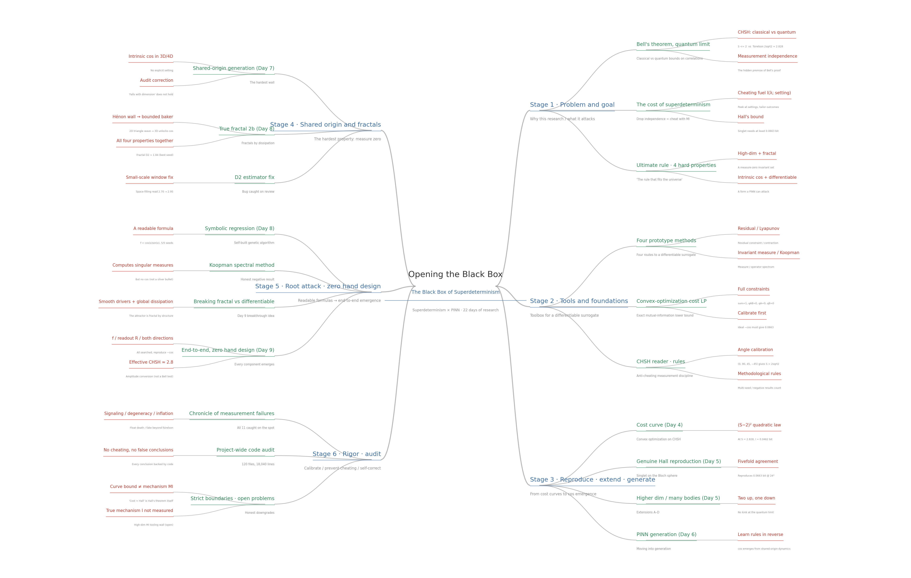
Framework overview: the six stages. Use the navigation bar or follow the branches in the map.
The research idea in one page
Bell’s theorem says that if you want to keep both determinism and locality, the only thing left to give up is measurement independence. That choice is superdeterminism. Giving it up requires the hidden variable λ to “peek” at the measurement settings, and the price is a mutual information I(λ; setting).
The main line of this work is to turn that philosophical claim into a computable engineering problem. Without signaling and without cheating, can we build a dynamical rule that satisfies four hard properties (high-dimensional, a fractal of measure zero, intrinsic cos, differentiable) and from which the quantum correlation −cos(θ) emerges on its own instead of being planted by hand?
The six stages are: define the problem (1); build differentiable tools and measurement discipline (2); reproduce and extend known results (3); confront the hardest property, the measure-zero fractal (4); use symbolic regression to find readable formulas and make every component emerge end-to-end (5); and a rigorous audit with honest downgrades throughout (6).
1Problem and goal▸Why this research, and what it sets out to crack
Background · How Bell’s theorem came about
The trigger: the EPR paradox. In 1935 Einstein, Podolsky and Rosen (EPR, after their initials) published a paper arguing that quantum mechanics is “incomplete”. The trigger was entanglement: after two particles interact and separate, measuring one seems to instantly “decide” the state of the other, however far apart they are. Einstein called this “spooky action at a distance” and found it absurd. He believed particles have definite values before measurement, fixed by a set of not-yet-known hidden variables λ. On this view quantum randomness is only our ignorance, and the universe is fundamentally deterministic and local.
Bell’s decisive step. For decades the “quantum vs hidden variables” debate stayed philosophical, with no experiment able to tell them apart. In 1964 John Bell proved that if EPR is right (local hidden variables exist, and the measurement settings are independent of λ), then the correlations between the two sites must obey an inequality: the , whose testable form is . For the first time, a philosophical dispute became a math problem that an experiment could settle.
The experimental verdict. Experiments repeatedly measured correlations beyond the inequality (in CHSH form, S ≈ 2.828 > 2), violating Bell’s inequality. So at least one of the three EPR premises is false. Each way out corresponds to an interpretation:
Give up locality → Bohmian mechanics (accepts faster-than-light influence)
Give up realism → Copenhagen interpretation (measurement creates the outcome)
Give up measurement independence → superdeterminism (the path this research takes)
What did Bell himself think of superdeterminism? Bell saw this third path himself. In a 1985 BBC interview (collected in The Ghost in the Atom, 1986) he acknowledged that there is a way to escape spooky action at a distance: assume the universe is completely deterministic, so that even the experimenter’s “choice” of which direction to measure was fixed in advance. Then the puzzle of how particle A learns, faster than light, what was measured at B disappears, because the universe (particle A included) “already knows” what will be measured and what the result will be. But Bell did not favor this path. He found the assumption that experimenters have no free choice too unattractive and did not pursue it. Superdeterminism was therefore pointed out and set aside by Bell himself: logically sound, psychologically hard to accept. This research sets out to work that set-aside path through to the end.
A key term: measurement independence. Measurement independence (also called statistical independence or free choice) is an implicit assumption of Bell’s theorem: the experimenter’s choice of measurement direction is unrelated to the particle’s hidden variable λ. λ does not “know” how you will choose; the two are statistically independent. Classical intuition treats this as obvious: the direction I measure is my free decision right now, so how could it be tied to a particle that set off long ago? That is why Bell’s derivation can freely assume the experimenter could have picked any direction. Superdeterminism drops exactly this assumption. If λ and the settings come from the same determined universe and are correlated, the experimenter no longer chooses settings independently, the premise of Bell’s derivation is removed, and quantum correlations can exceed the classical bound with no action at a distance. Why λ and the settings would be correlated is the question that invariant-set theory answers geometrically.
This research starts from that crack. It chooses superdeterminism because it is the only option that keeps both determinism and locality.
Picking up from that crack: Bell’s inequality is violated in experiments, so at least one EPR premise must go.
This research chooses superdeterminism, the only way to keep both determinism and locality. The price is admitting that what gets measured is itself determined by the initial conditions of the universe, so the hidden variable λ is correlated with the measurement settings. The key move is to turn this into an engineering problem: “λ is correlated with the settings” can be measured exactly as the mutual information I(λ; setting), the “cheating fuel” of superdeterminism. Hall (2011) proved that −cos(θ) needs at least 0.0663 bit of this mutual information. That number is the theoretical yardstick for the whole project: the closer a model gets to it, the less it cheats.
The three main superdeterministic models
Superdeterminism is not a single theory. The field has three main approaches:
Palmer’s (★ used here): the state of the universe is confined to a fractal, measure-zero invariant set in state space. λ and the measurement settings share an origin in that set and are correlated, which violates measurement independence and removes Bell’s premise.
’t Hooft’s cellular-automaton interpretation: quantum mechanics emerges from a deterministic cellular automaton at the Planck scale, and measurement choices are correlated with the underlying “ontic states”.
General superdeterminism (Hossenfelder and others): no specific mechanism; it directly denies statistical independence and argues, at the level of information theory, for the plausibility and cost of measurement dependence.
This research follows Palmer’s invariant-set approach because it offers the most concrete and computable geometric object, a fractal invariant set, which is exactly the kind of thing a differentiable neural network can try to approximate.
The problem all three must answer: , or the “conspiracy” charge. This is the main objection to superdeterminism (Wood & Spekkens, 2015). For the correlation between λ and the settings to reproduce the quantum prediction exactly in every experiment, the initial conditions of the universe seem to need tuning to an almost conspiratorial degree, which looks unnatural and ad hoc. Superdeterminism deliberately gives up measurement independence (admitting λ and settings are correlated), and fine-tuning is the objection it takes in return. The two are opposite sides of the same debate.
The three models differ in how they answer fine-tuning. Palmer’s answer is the most geometric: the correlation is not tuned by anyone; it is an automatic consequence of the geometric fact that the universe’s state lies on a fractal invariant set, with no fine-tuning of initial conditions required. Hossenfelder & Palmer (2020) wrote a dedicated reply to this charge.
Ultimate goalBuild a dynamical system with four hard properties (high-dimensional · fractal, measure-zero invariant set · intrinsic cos · differentiable) from which quantum correlations emerge naturally. This is the “invariant set that fits the universe” Palmer envisions, approached with a differentiable and symbolic regression.
1.1
Establish the CHSH criterion and the quantum limit
Approach
Using the standard CHSH angles (0°, 90°, 45°, −45°), verify by hand that quantum mechanics reaches S = 2√2. This is the physical yardstick for every later experiment.
Key result
Classical S ≤ 2 and the quantum Tsirelson bound 2√2 ≈ 2.828 are pinned down. This is the red line for judging “beyond classical” and “cheating”.
1.2
Quantify the cost of superdeterminism
Approach
Translate “giving up measurement independence” into information theory: how strongly λ is tied to the settings is the I(λ; setting). A minimal model shows it directly: the larger the δ, the more mutual information I is needed.
Key result
Hall’s 2011 lower bound of 0.0663 bit is introduced as the theoretical anchor for the minimum measurement dependence needed to reproduce the singlet (orange dashed line). It corresponds to a small δ ≈ 0.15. At δ = 0 (measurement independence) I = 0; at δ = 0.5 (maximal dependence) I = 1 bit.
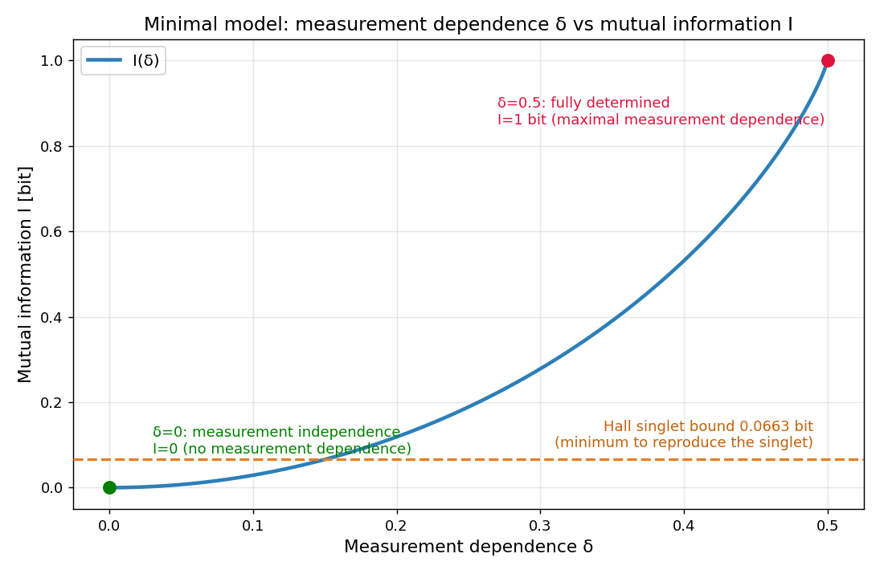
1.3
Lock in the four hard properties of the ultimate rule
Approach
Break the requirements of Palmer’s invariant-set theory into four testable properties: high-dimensional, fractal (measure zero), intrinsically producing cos, and differentiable.
Key result
“Fractal means non-differentiable” versus “a PINN must be differentiable” is the central deadlock, the hardest contradiction in the whole project. Stage 5 confronts it directly.
Stage summaryThis stage turns a philosophical claim (superdeterminism) into a computable, falsifiable engineering goal: reproduce quantum correlations with as little measurement dependence as possible while satisfying .
2Tools and foundations▸The toolbox for a differentiable invariant-set surrogate
Why is differentiability unavoidable? Because of how a works. A PINN is trained by (backpropagation): it repeatedly computes the gradient of the loss with respect to the parameters and nudges the parameters in a better direction. A gradient exists only if the loss is differentiable in the parameters. Without differentiability there is no gradient, and the whole gradient-optimization machine cannot run.
That makes the methodological requirement clear: to have a PINN “learn” an invariant set, we first need a differentiable surrogate that describes the set, so gradients can flow through it and guide optimization. That is the first task of this stage: building a differentiable invariant-set surrogate.
This also plants the central tension of the whole project. The invariant set the ultimate rule needs is fractal and measure-zero, and so non-differentiable everywhere, while a PINN can only work with differentiable things. The “differentiable vs fractal” conflict runs through everything until Stage 5 confronts it.
This stage first secures the differentiable side, and in parallel sets up two tools for checking whether results can be trusted. They do not produce models; they exist to check whether each later model’s numbers are credible. One is a convex-optimization LP that acts as a cost yardstick or referee: given a correlation curve, it computes exactly the lower bound on the cost of reproducing it, and every model’s reported cost is checked against it. The other is a set of methodological rules against measurement failure (calibrate first, use multiple seeds, never conclude from a single run, count negative results as results), which acts as the project-wide defense against cheating.
2.1
Differentiable invariant-set surrogate · four prototype methods
Approach
Consistency residual (points on the invariant set have residual → 0) · Lyapunov (separate the attractor by contraction and expansion) · invariant measure (learn the measure) · Koopman (operator spectrum).
Key result
All four were made to work and were first calibrated on problems with known answers. The invariant-measure method passed a three-way cross-check against the arcsine distribution; the Koopman method proactively withdrew unverified data.
How it works · click to expand
How do you represent an invariant set in a differentiable way? An invariant set is the geometric object in a dynamical system that maps back onto itself under the dynamics (an attractor or support). It may be a fractal that no single equation describes, so it cannot be optimized directly. Instead we need a differentiable proxy quantity that says whether a point or a distribution lies on the set, and then approach it by gradient descent. This stage tried four complementary routes in parallel (click a method name’s ⓘ for the full explanation).
① : turn a set into a differentiable function via its zero level set (prone to trivial solutions)
This provides the main framework of the surrogate: encode the invariant set as the zero level set of a differentiable function gθ, and turn “is it invariant?” into a loss with a gradient. Of the four routes, it is the only one that builds a “differentiable surrogate plus optimizable objective” from scratch; the other three verify or supplement it.
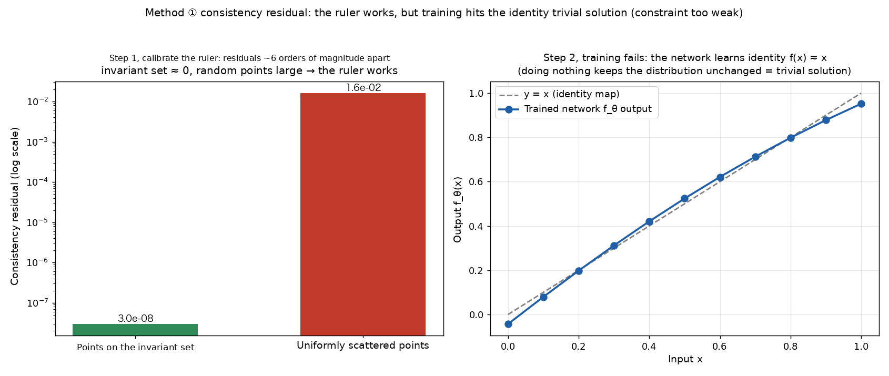
Left: calibration of the ruler. Points on the invariant set have residual ≈ 3e−8; randomly scattered points ≈ 1.6e−2, six orders of magnitude apart, so the ruler works. Right: used as a training loss, the network collapses to the identity map f(x) ≈ x (the blue line sits on the grey y = x). Loss = 0 but it means nothing: a trivial solution.
② : look at orbit contraction and expansion to block trivial solutions
This provides the acceptance test. Whether the surrogate has learned a real attractor, and whether it is fractal, needs an objective measure. The Lyapunov spectrum gives the contracting and expanding directions, whether volume collapses, and a non-integer dimension. It checks the hard property “measure-zero fractal invariant set” and lays the measurement groundwork for the fractal tests in Stage 4.
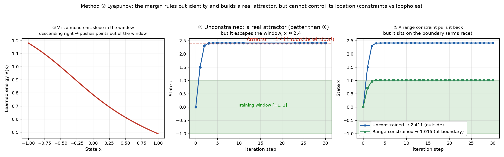
Left: the learned energy V(x) decreases monotonically in the window, pushing points toward the attractor. Middle: an improvement over method ①, a real attractor is learned (x ≈ 2.41), but it escapes outside the training window [−1, 1]. Right: with a range constraint it is pulled back inside (x ≈ 1.015). Lyapunov rules out the identity trivial solution and really builds an attractor, but it controls shape, not location, so extra constraints are still needed.
③ : learn the actual probability density, calibrated against arcsine to catch trivial solutions
This adds the measure dimension. Method ① only describes whether a point is on the set (its shape), not how much probability sits where on it. Yet the heart of Palmer’s invariant set is precisely that singular, measure-zero measure. Learning the invariant measure μ lets the surrogate describe the measure as well as the shape, and a three-way arcsine cross-check shows this differentiable route to learning a measure is reliable.
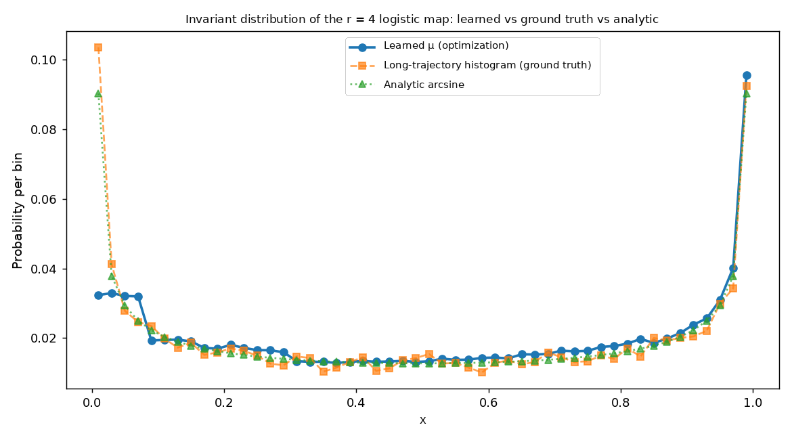
Calibration of this method: the invariant measure of the r = 4 logistic map. Blue = μ learned by optimization; orange = histogram from long trajectories (ground truth); green = the analytic arcsine distribution μ(x) = 1/(π√(x(1−x))). The three curves broadly coincide, with probability spiking at both ends (the arcsine signature), so the differentiable route to learning a measure gets a known answer right.Why the r = 4 logistic map? The logistic map x → r·x(1−x) is the most classic and simplest one-dimensional model in chaos research. Only at the special value r = 4 does it have an exact analytic invariant measure (the arcsine distribution). Because the answer is known at r = 4, it serves as a calibration problem, exactly as the “calibrate first” rule requires.
④ (operator spectrum): compute the measure from the spectrum, an independent check that needs no differentiable rule
This provides a backup route that does not depend on a differentiable rule. When the dynamics are too complex to differentiate, the Koopman spectrum can compute singular or fractal measures directly at the operator level, cross-checking methods ① and ③. It also served as a cautionary example: it prompted a proactive withdrawal of unverified data, which reinforced the rule to calibrate first and never trust a single run.
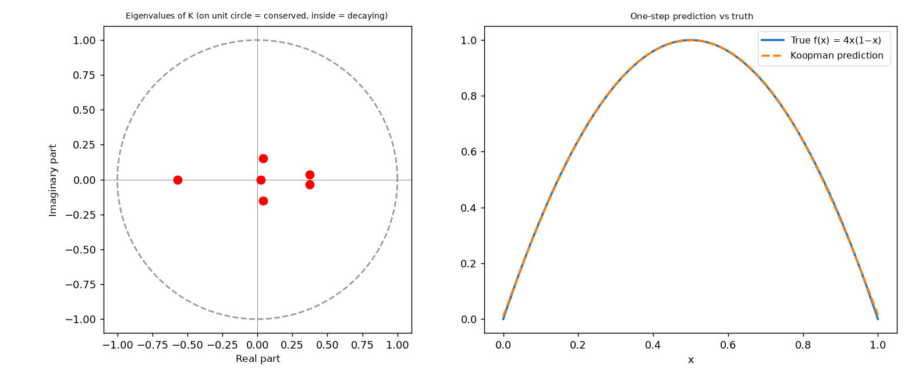
Left: eigenvalues of the Koopman operator 𝒦 (on the unit circle = conserved, inside = decaying). Right: the one-step prediction reconstructed from the spectrum (orange dashed) almost exactly matches the true map f(x) = 4x(1−x) (blue), so the spectral method does capture the dynamics. Because the spectrum is sensitive to truncation, parts that were not fully verified were deliberately left blank at this stage.
Why run four in parallel? No route is best a priori. Residual and Lyapunov are good at describing the shape of the set; invariant measure and Koopman are good at describing the measure on the set. The four cross-check each other, and all are differentiable and optimizable, which lays the foundation for learning an invariant set with a PINN.
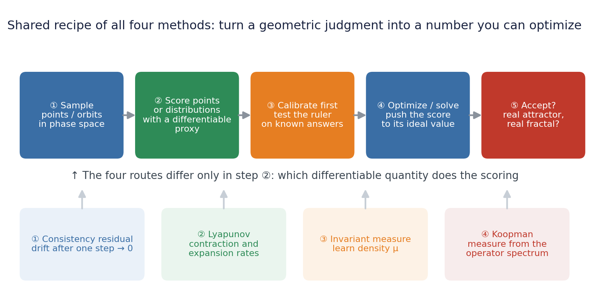
Workflow: the four methods share one recipe. Sample points or trajectories → score points or distributions with a differentiable quantity → calibrate on a known answer → optimize or solve by gradient → accept or reject. They differ only in step ②, which differentiable quantity does the scoring.
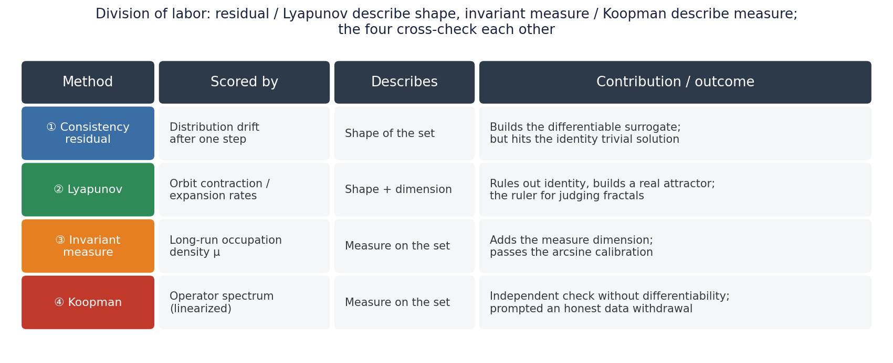
Division of labor: residual and Lyapunov focus on the shape of the set; invariant measure and Koopman focus on the measure on it. The four cross-validate each other.
2.2
Convex-optimization cost LP
Approach
Use to compute exactly the minimum measurement-dependence cost needed to reproduce a given correlation curve (CHSH value). This is the cost yardstick, the referee, for the whole project.
Relation to the superdeterministic models that were trained: the LP lower bound depends only on the input CHSH value, not on any model. The LP is a reference yardstick, not a model’s score.
Relation to Hall’s 0.0663: 0.0663 is the LP lower bound for the ideal singlet curve −cos. Its role is to calibrate the ruler: feed in the ideal −cos, and if the result is 0.0663, the solver is correct.
Key result
cvxpy reaches the global optimum and was independently recomputed. Calibration on the ideal −cos must give 0.0663, which is the precondition for trusting the LP.
Honest boundary
A key insight, foreshadowing Stage 6: this LP computes the theoretical lower bound for a correlation curve, not the true mutual information of any specific mechanism. That distinction becomes central in the audit.
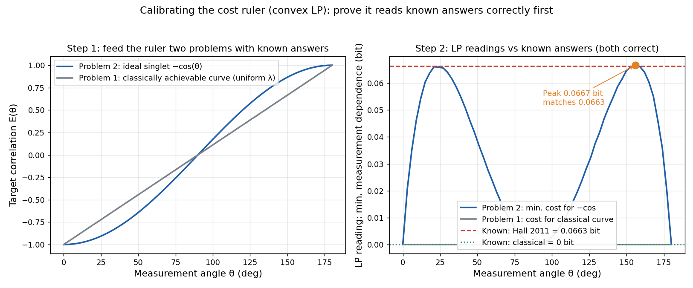
Left: two problems with known answers are fed to the LP, the ideal singlet −cos (blue) and a classically achievable curve (grey, produced by uniform λ). Right: the LP readings. The classical problem reads 0 everywhere (numerical error < 1e−15; the answer is 0). The ideal −cos problem peaks at 0.0667 ≈ Hall’s 0.0663 (peak at 156° = 180° − 24°, the mirror point, equivalent to Hall). Both readings are right, so later readings from this ruler can be trusted.
2.3
CHSH reader + methodological rules
Approach
Two pieces of infrastructure: a (a “lie detector” against misreadings) and the (the project-wide defense against cheating).
Key result
This discipline is the reason the 11 later measurement failures were all caught on the spot.
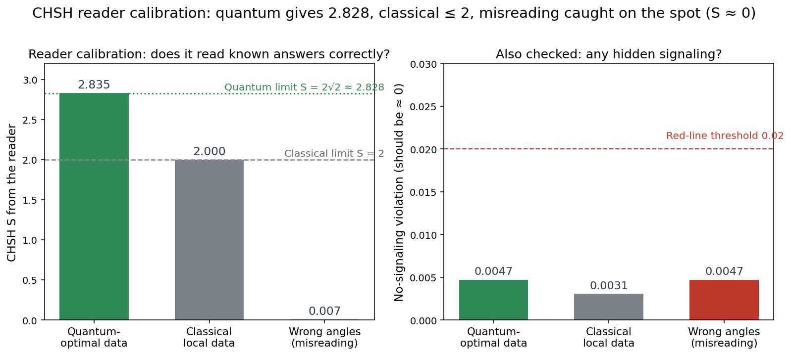
Reader calibration: proving it reads known answers correctly. Three kinds of data are fed in:· Quantum-optimal data (green) → reads S = 2.835 ≈ 2√2, right at the quantum limit; · Classical local data (grey) → reads S = 2.000, at the classical limit; · Data with the wrong angles (red) → reads S ≈ 0, so this “looks like measuring but measures the wrong thing” error is caught on the spot.The right panel also checks the no-signaling violation; all three are far below the 0.02 red line, so the strong correlations are legitimate and nothing is secretly signaling. This is “calibrate first”: a new tool proves itself on problems with standard answers (quantum 2.828, classical ≤ 2) before its later readings are trusted.
Stage summaryWith tools and discipline in place, the question moves from “can it be computed” to “can it be computed credibly”. Every number must pass three gates: calibrate first, multiple seeds, and anti-cheating checks.
3Reproduce · extend · generate▸From cost curves to cos emergence
With the foundation built, this stage advances on three lines:
(1) Draw the full cost–correlation trade-off curve. The LP yardstick from Stage 2 was calibrated only at single points; here it sweeps the full range of S from 2 to beyond quantum.
(2) Rigorously reproduce Hall, checking whether the Stage 2 methods recover the accepted answer (0.0663 bit, peak at 24°) and so validating them.
(3) Move the PINN from passive fitting to active generation. The ultimate goal requires the cos correlation to emerge intrinsically rather than be planted, so we first verify, in the simplest smooth setting, that a rule can grow cos on its own, before Stage 4 adds the harder fractal constraint.
3.1
The cost curve and a quadratic law
Approach
Building on CHSH, parameterize setting–λ with a softmax and sweep S from 2 to beyond-quantum with convex optimization.
Key result
At S = 2.828, I = 0.0462 bit. The cost approximately follows a (S − 2)² quadratic law, a numerical fit (R² = 0.9993) and not an analytic proof. “This model’s 0.046” and “Hall’s 0.0663” were correctly kept apart and a false equivalence was rejected.
How it works · click to expand
Why is this model 0.046 while Hall is 0.0663? Both numbers are “the minimum measurement-dependence mutual information needed to reproduce a target correlation under no-signaling”. They differ only in the target:
0.0462 bit: only the four CHSH setting combinations must give S = 2.828. The “cheat sheet” λ only has to handle four fixed exam questions.
0.0663 bit (Hall 2011): the correlation must equal −cos(θ) exactly at every angle θ, a whole continuous curve, infinitely many questions.
The more questions the cheat sheet must cover, the more information about the settings it needs to carry. Mathematically this is monotonicity of convex optimization: more constraints → smaller feasible set → the minimum can only rise. So the cost of reproducing the full singlet curve is necessarily at least the cost of reproducing only the CHSH value, and 0.0462 < 0.0663 is a structural necessity, not a numerical coincidence. That is why the false equivalence was rejected: 0.046 does not count as reproducing Hall. The genuine full-angle reproduction of 0.0663 is done in the next card (the sphere version).
What does the quadratic law buy us?
① It upgrades the cost from one point to a law. M1 gave only the value at S = 2.828; the law I ≈ 0.0665·(S − 2)² describes the whole range: how far you exceed classical, the cost grows with the square of the excess.
② It gives the intuition that going beyond classical starts free. A quadratic has zero value and zero slope at S = 2. Barely exceeding the classical limit needs negligible measurement dependence; the cost climbs more steeply as you approach the quantum limit.
③ It is the baseline for a “no kink” negative result. With the smooth quadratic confirmed in the quantum region, the curve stays smooth past 2.828 into the beyond-quantum region (left panel below). If the quantum limit 2√2 were special under the measure of measurement dependence, the curve would bend there, and it does not. Conclusion: measurement dependence cannot explain what is special about the Tsirelson bound. This is the key negative result of the extension line (card 3.3).
Left: sweep S from 2 (classical limit) past 2√2 (quantum limit, the curve is smooth with no kink) into the beyond-quantum region. At S = 2.828, I = 0.0462 bit, consistent with the M1 single point. Right: in the quantum region, plotting I against (S − 2)² gives a straight line through the origin (slope 0.0665, R² = 0.9993), directly confirming the quadratic law.
3.2
A genuine reproduction of Hall
Approach
On the , use and dot-product sign measurements to reproduce the full-angle singlet −cos.
Key result
An independent reproduction of Hall’s 2011 value of 0.0663 bit (peak at 24°, fivefold agreement). This is the most solid verification anchor in the project.
What the curve means: for each measurement angle θ, convex optimization finds the minimum measurement dependence needed to bend that angle’s correlation to the quantum value −cos(θ).Zero cost at three points (θ = 0°, 90°, 180°): the classical correlation from uniform λ (measurement independence) happens to equal −cos at these three angles, so no peeking is needed. Away from them, −cos and the classical curve diverge, cost rises, and two peaks form.Orange peak 0.0667 bit at 156°: mirror-equivalent to Hall’s 0.0663 bit at 24°. This construction (singlet −cos with B = −sign(y·λ)) is mirror-symmetric about 90°, so 24° and 156° are the same physical point; the numerical error is about 0.3%.“Fivefold agreement” means the value, model, measure, aggregation method and peak location (up to the mirror) all match Hall’s paper. This is a full check-up of the Stage 2 toolchain on a problem with an accepted answer; only after passing it does the toolchain earn the right to enter new territory where no answer is known.
3.3
Extensions: more settings, higher dimension, many bodies
Approach
Extend the framework in four directions: more settings (chained Bell), higher dimension (qudit / CGLMP), many bodies (GHZ / Mermin), and beyond-quantum (PR-box).
Key result
The cheating cost goes “two up, one down”: it rises with number of bodies and dimension, and falls with number of settings. There is no kink at the quantum limit 2.828, so measurement dependence cannot explain what is special about Tsirelson’s bound.
Honest boundary
A few high-N points (N = 5, 6) are hard-coded values not reproduced in the script; the trend should be read from the computed points.
All earlier costs were computed in the standard CHSH scenario: two parties, 2 settings each, 2 outcomes per measurement, target at most the quantum limit 2.828. This card turns each of those four knobs in turn to see which kind of complexity the cheating cost is sensitive to. All four directions use the same strict procedure: first anchor at a known answer (n = 2 for A, d = 2 for B and S = 2.828 for D all return to CHSH’s 0.046, consistent with card 3.1), then find the minimum measurement dependence by convex optimization.
① A · More settings (chained Bell): turning the number of settings n
In CHSH, Alice and Bob each have only 2 settings. With n = 2 the angles are coarsely cut, and neighboring directions are far apart (say 90° or 45°). That is exactly where quantum and classical theories differ most: at large angles, quantum correlations reach strengths no classical model can. With large n, you are effectively approximating a continuously rotating detector with many small steps. For continuous, slowly varying processes, classical local realism can almost always keep up by following locally, the way a circular arc cut finely enough looks like straight segments, and a local model needs nothing faster than light. So the more settings, the more the setup resembles a continuous process classical physics can approximate, and the quantum advantage is diluted.
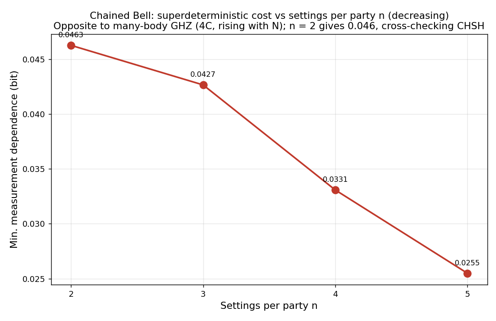
Cost decreases with settings per party n: n = 2 → 0.046, n = 3 → 0.043, n = 4 → 0.033, n = 5 → 0.025. The reason is the “small steps chasing a continuous rotation” intuition above: more settings dilute the quantum advantage, so less peeking is needed to bend classical correlations into quantum ones.
② B · Higher-dimensional qudits (CGLMP): turning the outcome dimension d
So far each measurement had only two outcomes, ±1 (a qubit), like a coin toss. A qudit gives d possible outcomes per measurement, like rolling a d-sided die; the CGLMP inequality (Collins–Gisin–Linden–Massar–Popescu) generalizes to d outcomes and reduces to CHSH at d = 2. The more faces, the harder it is for two dice to stay “in sync”. A classical local model can only fake it with a pre-agreed lookup table, while entanglement weaves a finer correlation structure across the d outcomes that classical strategies struggle to imitate. The gap between these fine quantum correlations and classical physics widens with d, so the cost increases.
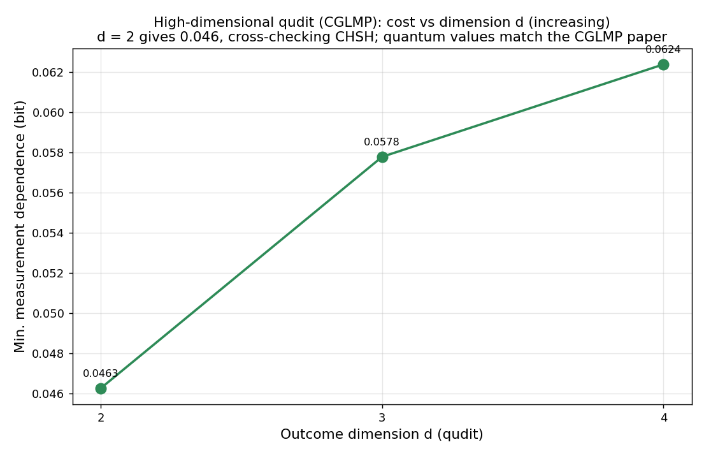
Cost increases with outcome dimension d: d = 2 → 0.046, d = 3 → 0.058, d = 4 → 0.062. High-dimensional entanglement is more nonlocal (the quantum violation grows with d), so reproducing it is more expensive.
③ C · Many-body GHZ (Mermin): turning the number of entangled parties N
So far only two parties (Alice and Bob) were entangled. The GHZ state (Greenberger–Horne–Zeilinger) extends entanglement to N particles. By analogy with higher dimension, this is like tossing N coins: the more coins, the harder it is for them to stay in sync, and the cost rises.
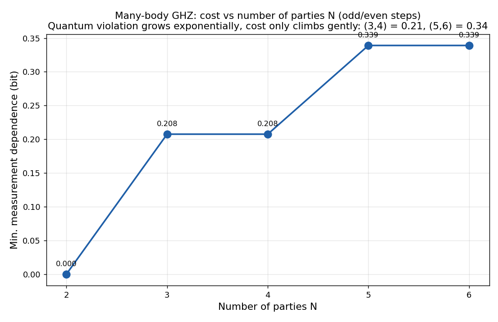
Cost rises in steps with N. At N = 2 this construction’s quantum value equals the classical bound (no violation, cost 0); N = 3, 4 → 0.208; N = 5, 6 → 0.339, pairing odd and even into steps. The quantum violation grows exponentially with N but the cost only climbs gently: more expensive for many bodies, but not an exponential blow-up (N = 5, 6 are hard-coded points; see the honest boundary).
④ D · Beyond-quantum (PR-box): turning the correlation strength S
A PR-box (Popescu–Rohrlich box) is a hypothetical correlation that strictly satisfies no-signaling yet pushes CHSH to its algebraic maximum S = 4: stronger than quantum, but still unusable for faster-than-light communication. Since the cost curve already established that minimum measurement dependence is quadratic in CHSH, extending into the beyond-quantum range makes the cost keep rising.
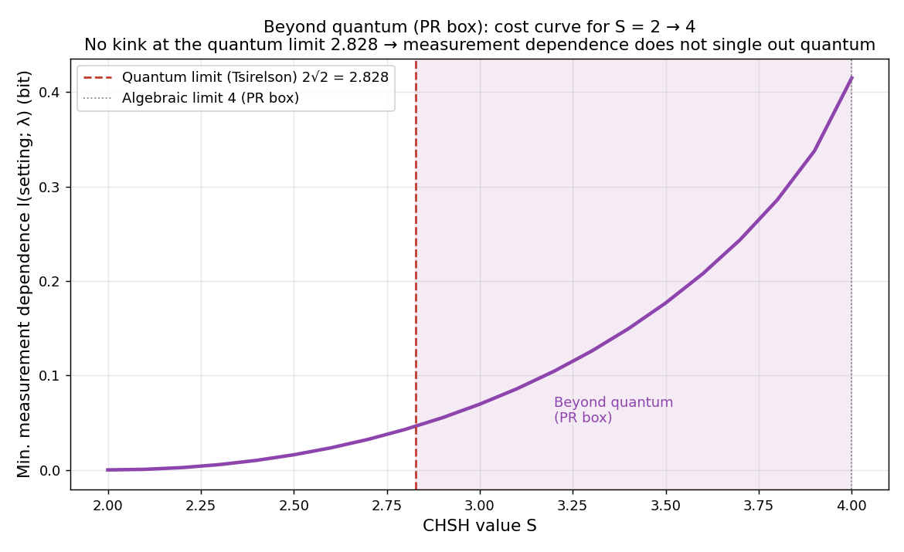
Sweeping S from 2 to the algebraic maximum 4, the cost is smooth and monotonic (S = 2.828 → 0.046, S = 4 → 0.415) and shows no kink at the quantum limit 2.828 (red dashed line). Measurement dependence treats quantum and beyond-quantum alike. Corollary: why quantum mechanics stops at 2.828 (Tsirelson’s bound) cannot be explained by measurement-dependence cost; what makes quantum special lies elsewhere.
3.4
The PINN moves into generation
Approach
Instead of fitting data points, learn in reverse the rule that produces a target distribution; then let cos emerge from shared-origin dynamics.
Key result
① Learning a rule in reverse works (calibrated against arcsine; three necessary conditions identified). ② A unified model can intrinsically produce the full-angle cos, but its cost exceeds the per-angle lower bound (about 2.6× on average, about 4.5× at the peak). The 0.0663 bit of measurement dependence for cos cannot be avoided even after removing the dot product, another confirmation of Bell.
Honest boundary
The multiplier for the unified PINN was honestly downgraded to an order-of-magnitude 2–5× (the peak drifts with training; the optimization is ill-conditioned). The measurement function for cos is still a hand-made sign dot product, so genuine intrinsic emergence remains open.
M5 experiment chain: from verification to generation
5.1 Experiment 0 · learn a rule in reverse ✓
target = arcsine distribution (analytic answer as safety net)
network acts as the rule f_θ; learns dynamics that produce it
finds 3 necessary conditions: constrained rule family ·
real trajectories · short iteration chains
│
├─ Discrete circle ✗ (discarded, cautionary example)
│ first try at intrinsic cos: bends the curve, but cost falls
│ far below Hall 0.0663 bit
│ cause: discrete sign measurement splits λ into blocks;
│ within a block it can shift for free → numerical cheating
│
├─ Continuous sphere · unified PINN
│ move to the 3D Bloch sphere, closing the discrete loophole
│ one PINN produces the full-angle −cos (mean KL = 0.123 bit)
│ cost becomes real, but clearly too high; peak artifact
│ sits at the endpoints 0° / 180°
│
├─ Variant B · sin(θ) scaling
│ perturbation ∝ sin(θ), endpoints automatically cost 0
│ peak moves toward Hall’s 24° (mean KL = 0.090 bit)
│ but ill-conditioned: peak drifts with seed (24°→15°→8°)
│
└─ Variant C · per-angle independent (gold standard)
back to per-angle convex optimization (as in 3.2)
peak 0.0670 bit @ 24°, reproduces Hall 2011 (~1% error)
= the lower bound any unified model can reach;
used to judge the multiplier
Overview: first verify that learning a rule in reverse works at all. The discrete circle, the first attempt at intrinsic cos, hit numerical cheating and was discarded. The continuous sphere with a unified PINN closed that loophole and made the cost real but too high. Variant B (sin scaling) removed the endpoint artifact but trained unstably. Variant C (per-angle independent) used convex optimization to give the theoretical lower bound, a gold standard for measuring how much more the two unified models cost.
① Learning a rule in reverse: verify the mechanism first
Before tackling intrinsic cos, a more basic question: can a PINN learn, in reverse, the dynamical rule that produces a target distribution, instead of fitting data points forward as before? The target was chosen to have an analytic answer for calibration: the arcsine distribution (the invariant measure of the r = 4 logistic map, already used for the ). The network acts as the rule fθ and learns dynamics that produce it.
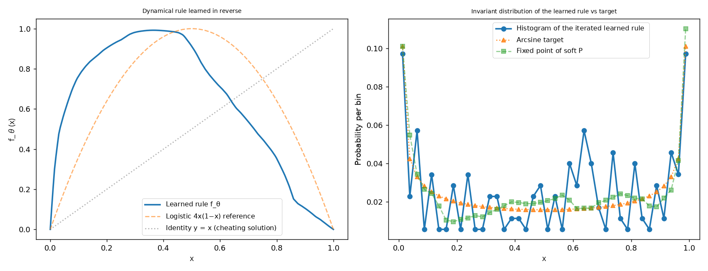
Left: the learned rule fθ (blue) lies roughly near the target logistic map (orange), clearly away from the do-nothing identity y = x (grey dashed), the cheating solution an optimizer most easily slides into. Right: the histogram after iterating the learned rule for a long time (blue) matches the arcsine target (orange) and the rule’s own fixed-point distribution (green), with probability spiking near 0 and 1, the arcsine signature. Conclusion: learning a rule in reverse works, and three necessary conditions were found (constrain the rule family, use real trajectories rather than single steps, keep iteration chains short).
② Discrete circle: first attempt, numerical cheating (discarded)
With the mechanism verified, the real attack on intrinsic cos began: λ on a circle (discretized into N cells), Alice’s direction fixed, Bob’s direction θ, and the network learns a conditional measure μθ(λ) to bend the default triangle-wave correlation into the quantum −cos(θ).
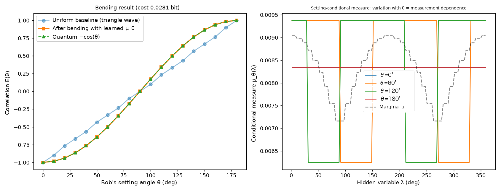
Left: the learned μθ (orange) does bend the uniform baseline’s triangle wave (blue) into a curve almost on top of the quantum −cos(θ) (green); the bending looks like a success. Right: but the conditional measure itself is a piecewise-jumping square wave in λ (jump positions differ by θ), not a smooth distribution. The optimizer did not make fine continuous adjustments to the λ curve. It crudely split the circle into a few large blocks (the positive and negative regions of the sign function) and only moved probability mass between blocks, placing it arbitrarily within blocks, since the measurement ignores details inside a block.
③ Continuous sphere · unified PINN: loophole closed, but cost too high
λ moved from the discrete circle to a continuous distribution on the , with the dot-product sign measurement restored (the same setup as “A genuine reproduction of Hall”). There are no blocks to exploit on the sphere, closing the discrete-circle loophole. One PINN is trained to give the conditional distribution for all angles θ at once, rather than solving each angle separately as convex optimization does.
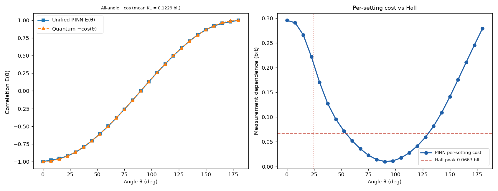
Left: the unified model’s E(θ) (blue) almost exactly matches the quantum −cos(θ) (orange); the correlation curve is reproduced well. Right: but the cost is wrong. The true measurement dependence (blue) is highest at the endpoints 0° and 180° (close to 0.30 bit) and dips below Hall’s 0.0663 bit (red dashed) in the middle. Hall’s true peak should be near 24° and the endpoint cost should go to 0. With numerical cheating blocked, the cost is finally real, but the unified model’s shape still carries artifacts and cannot yet be trusted.
④ Variant B · sin scaling: endpoint artifact fixed, but training unstable
Diagnosing the endpoint artifact: at θ = 0° or 180°, Alice’s and Bob’s directions coincide or are opposite, and physically perfect (anti)correlation needs no peeking, so the cost should be exactly 0. Multiplying the perturbation amplitude by sin(θ) makes it vanish automatically as θ → 0° or 180°, forcing zero cost at the endpoints.
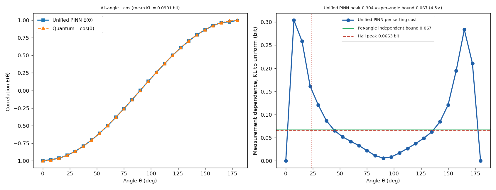
Left: the correlation curve still fits −cos(θ) well. Right: the endpoint cost is pushed to 0, and the shape changes from the wrong “high at both ends, low in the middle” to the right form, with the peak moving much closer to Hall’s 24°. But this fix comes from a hand-designed scaling function, treating the symptom rather than letting the mechanism emerge on its own. Rerunning with different random seeds makes the peak drift (24° → 15° → 8°), so the optimization itself is unstable, and the conclusion is only “right order of magnitude”, not an exact reproduction.
⑤ Variant C · per-angle independent: back to convex optimization for a gold standard
Purpose: the unified PINN (③ and ④) must serve all angles with one set of parameters, which is inherently harder than solving each angle separately. Whether its cost is high cannot be judged in a vacuum; it needs an independent reference.
Method: no neural network here. Go back to per-angle independent convex optimization: each θ gets its own problem solved for minimum cost, with nothing shared. Convex optimization guarantees the global optimum (unlike neural training, which can get stuck in local solutions and drift with the seed).
Output: a unified model adds the extra constraint that all angles share one rule. Constraints can only make the optimum worse, so this per-angle curve is a floor no unified model can beat.
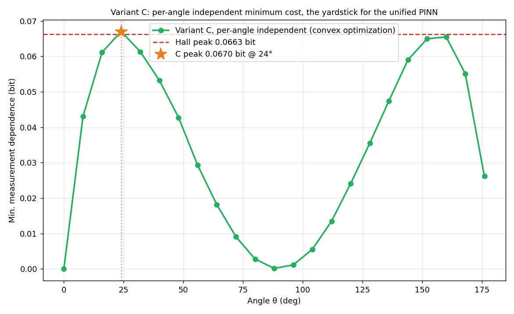
Peak 0.0670 bit at 24° (orange star), right on Hall’s 2011 value of 0.0663 bit (red dashed), about 1% error. This curve re-confirms the Stage 3 “genuine reproduction of Hall”; here it serves as the yardstick. Against it, the continuous-sphere unified PINN (peak 0.30, about 4.5× the floor) and Variant B (peak of the same order) give the honest multiplier for how much more a unified model costs than the theoretical floor: about 2.6× on average and about 4.5× at the peak, and only as an order-of-magnitude conclusion because training is unstable.
Stage summaryQuantum correlations can now emerge from a differentiable rule instead of being filled in by hand. But all of this used smooth measures that fill space, and the hardest property, the measure-zero fractal, has not been touched yet.
4Shared origin and fractals▸Confronting the hardest property: a measure-zero invariant set
This stage attacks the two hardest walls. The first is shared-origin generation: take the measurement setting and the hidden variable λ from different readouts of the same trajectory, so that no-signaling holds naturally and the rule contains no explicit setting. The second is a true fractal: earlier smooth measures filled space (nonzero measure), sidestepping the soul of Palmer’s theory. Here a dissipative map compresses the attractor into a measure-zero fractal, facing this property head-on.
4.1
Shared-origin generation
Approach
The setting and λ share an origin in one trajectory evolved under the chaotic , read out by : at the same instant, the x coordinate is the setting and the y coordinate is λ. The rule itself is learnable (cat-map base + PINN perturbation), and training pushes the correlation shape toward −cos.
Key result
In 2D, a learnable shared-origin rule with no explicit setting robustly produces a near −cos correlation (shape gap about 0.06, confirmed over several seeds), with a true cost about 2× Hall. In 3D and 4D, after switching algorithms, the reading drops to about 1.2×, but these are two different kinds of quantity, so we cannot say “going up in dimension lowered the cost” (see the honest boundary).
Honest boundary
Audit correction, stated plainly. An early claim was “2D cost ≈ 2× Hall → 3D/4D cost ≈ 1.2×, so higher dimension saves cost.” That drop is an illusion. The 2D value of 2× is the true cost of this rule, measured directly with a mutual-information estimator. The 3D/4D value of 1.2× came after the mutual-information estimator stopped working in higher dimension (see ③ below), forcing a switch to the convex-optimization curve-reproduction lower bound. A lower bound answers “what is the least this could theoretically cost”, not “what did this rule actually pay”. Comparing the two and calling it a reduction is a mismatched comparison, overturned in the Stage 6 audit. The true cost of this rule in higher dimension has never been reliably measured; the tooling wall is still unsolved.
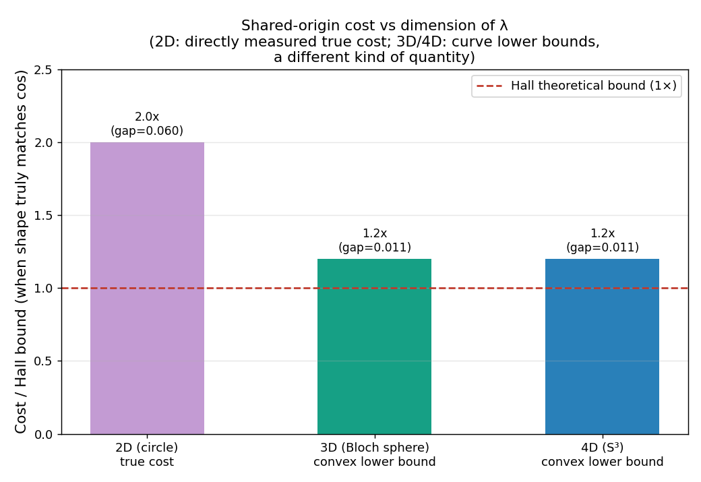
Cost readings in different dimensions (when the shape truly matches cos): 2D ≈ 2.0× (true cost), 3D ≈ 1.2×, 4D ≈ 1.2× (both convex-optimization lower bounds). Note: the three bars look like “higher dimension is cheaper”, but the 2D bar and the 3D/4D bars are different kinds of quantity computed by different algorithms (see the honest boundary and ② ③ below), and must not be read as one “cost falls with dimension” curve.① The Arnold cat map scheme
Goal: build a rule with no explicit setting, so that the setting and λ grow correlated from the same trajectory. This is the minimal computable version of Palmer’s shared-origin picture.
Method: add a PINN perturbation on top of the Arnold cat map (the base) to form one learnable evolution rule. Take the x coordinate at an instant as the setting and the y coordinate as λ (coordinate separation), and set the training loss to the gap between the correlation shape and −cos, so the rule approaches the target shape by itself.
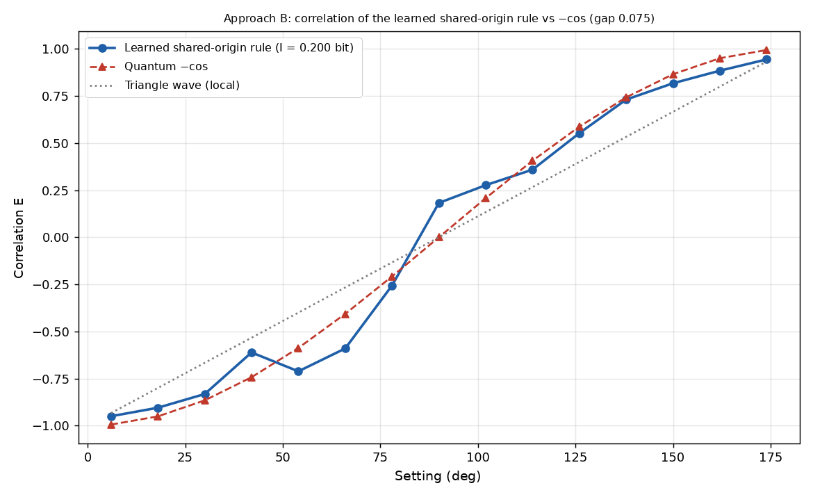
The correlation from the learned shared-origin rule (blue) closely follows the quantum −cos (red dashed) and clearly departs from the triangle wave (grey dashed). For the first time, cos emerges intrinsically from a shared-origin dynamical rule with no explicit setting, instead of being planted by hand.
② How the 2D cost was measured: robustly about 2× Hall
Once the rule from ① had the right shape, a mutual-information estimator measured its true cost directly, averaged over several seeds (to avoid being fooled by a lucky run). Whether the shared-origin relation used two time points on one trajectory (time separation) or two coordinates at one instant (coordinate separation), the cost stayed robustly around 2× Hall and could not be pushed lower.
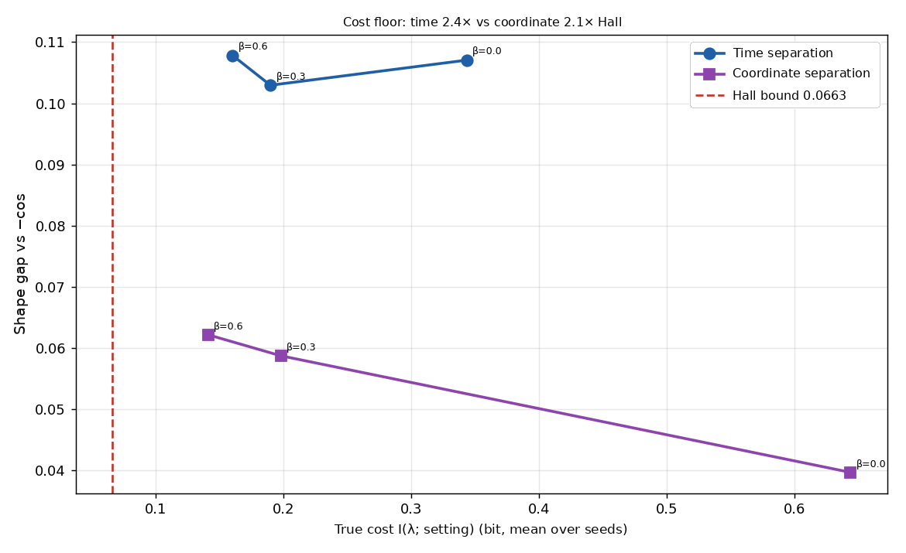
Time separation (blue) ≈ 2.4× Hall; coordinate separation (purple) ≈ 2.1× Hall. Two constructions end up in the same place near 2×, which suggests this is a property of the shared-origin mechanism itself rather than a poorly tuned separation scheme. Coordinate separation is slightly better numerically and was adopted.
③ Going to real 3D/4D: cost from convex optimization
Why convex optimization: in higher dimension, the mutual-information estimator that directly measures “what this rule actually pays” is unreliable (see ②), so the question has to change. The sign measurement cuts the sphere into four discrete regions by Alice’s and Bob’s directions (++ / +− / −+ / −−). The correlation and cost depend only on how the probability of λ falling in each region changes with θ. That is a discrete probability problem, and convex optimization can compute its lower bound exactly without a continuous mutual-information estimate.
How this differs from earlier convex optimization: earlier (“cost curve and quadratic law”, “genuine reproduction of Hall”), convex optimization was a yardstick or referee, used only for comparison and never presented as a specific mechanism’s true cost. Here, because of tooling limits, the lower bound is used as a stand-in for “what this shared-origin rule costs”. A lower bound is still only the theoretical minimum, not what the rule actually pays, and the two cannot be equated.
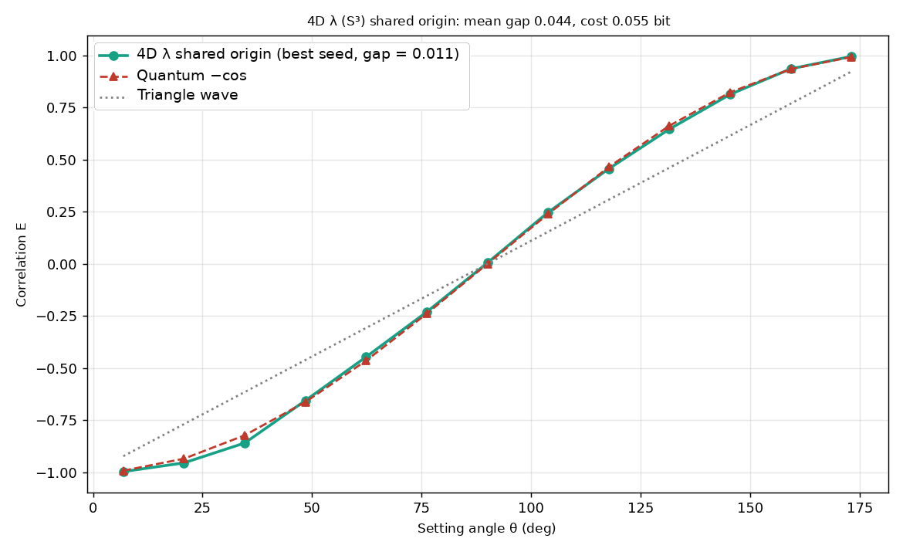
Best 4D seed: shape gap 0.011, convex lower-bound cost 0.078 bit (≈ 1.2× Hall). 3D is more stable (5 seeds, std < 0.02); its best seed also has gap 0.011 and cost 0.082 bit (≈ 1.2× Hall). The lower bound is only meaningful when the gap truly approaches 0 (the shape really matches cos). In 4D the seeds actually vary a lot (gap from 0.011 to 0.136), and only the best seed is quoted here. “3D/4D is cheaper than 2D” holds only when comparing lower bounds with lower bounds, never against the 2D true cost.
4.2
Building a true fractal by dissipation → 3D unlocks cos
Approach
Goal: combine 3D and a fractal, so that cos still emerges intrinsically on a genuinely measure-zero fractal attractor.
Key result
2D is locked to the triangle wave; moving to 3D unlocks cos. For the first time, cos emerges on a genuinely measure-zero fractal.
Attempt 1: Hénon hits a numerical divergence wall
The classic (a dissipative chaotic system that contracts onto a fractal attractor) was used as a base, with the rule made learnable (Hénon base + PINN perturbation) and trained to match −cos.
Result: the Hénon map has an unbounded quadratic term x². Over the repeated iterations of multi-step gradient training it diverged numerically: x was pushed to around −50,000, the whole trajectory escaped, the attractor collapsed into a divergent curve, and the correlation went to zero. This is not poor tuning; the map itself is unsafe under gradient training.
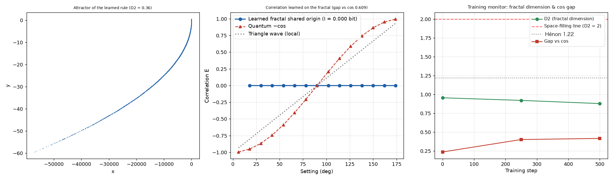
Left: the learned attractor (D2 = 0.36). The trajectory escapes from 0 to x ≈ −55,000; it no longer looks like an attractor. Middle: correlation (gap vs cos 0.609). The blue line (learned fractal shared-origin) is flat at 0, the correlation wiped out by the divergence. Right: training monitor. D2 falls from 0.95 to 0.6 and keeps dropping, with no sign of convergence.
Attempt 2: the baker map
Construction of the (a bounded dissipative baker map): the whole space is confined to the unit cube [0,1]³. The x coordinate is doubled and stretched (×2 mod 1, which can never leave [0,1)), and depending on whether x lands in the left or right half, the y and z coordinates are compressed into two narrow bands with a permanent gap between them. Nesting that gap again and again weaves a Cantor set (a measure-zero fractal) in the y and z directions. The map is bounded everywhere, so it cannot repeat Hénon’s divergence. The compression ratio a is fixed at 0.42 (not learned by the PINN) to prevent cheating: if it were learnable, the easiest solution would be to turn compression off and let the attractor fill the whole space again, which would no longer be a fractal. The theoretical fractal dimension is D2 ≈ 1 + 2·log2 / log(1/a) ≈ 2.6 (less than 3, confirming a true fractal). Everything stays bounded and no divergence occurs.
The 3D baker attractor: a scatter of 25,000 points does not fill the cube but gathers into structured sheets and bands, as a fractal attractor should. The measured D2 = 1.55 < 3, “thinner” than the theoretical 2.6.The correlation learned on the 3D fractal (blue) closely follows the quantum −cos (red dashed) and clearly departs from the triangle wave (grey dotted); the gap vs cos is only 0.032.
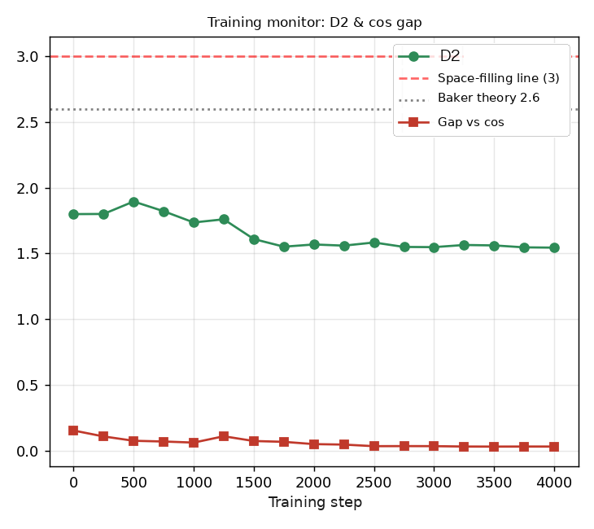
Training monitor: the green line (D2) stays between 1.5 and 1.9 throughout, never approaching the space-filling line (3) nor collapsing to a line (< 1.1). The red line (gap vs cos) falls during training and settles low.
Final result: are both goals (keep the fractal + produce cos) met at once? Looking at the three figures together (attractor shape, correlation shape, and fractal dimension throughout training), keeping the fractal and matching cos are achieved simultaneously, not by trading one for the other.
Honest boundary
cos is constrained by the fractal geometry: only 3 of 5 random seeds reach the target (not robust). The curve-reproduction lower bound is about 4.6× Hall, more expensive than the shared-origin line (about 2× / 1.2×).
Stage summaryAll four hard properties appear together for the first time, but “fractal” and “readable formula / differentiable” still live in different models. The fractal comes from hard-built baker geometry with no readable formula; symbolic regression has readable formulas but no fractal. The deadlock is not yet broken.
5Root-level attack · zero hand design▸Readable formulas → end-to-end emergence
This stage first uses two root-level approaches to look for readable dynamical formulas, then directly breaks the deadlock exposed in Stage 4, and finally lets every component of the model (the dynamics f, the readout map R, and both measurement directions) emerge from scratch, approaching zero hand design.
5.1
Symbolic regression finds a readable formula
Approach
A self-built genetic-algorithm engine (expression trees) searches directly for readable analytic expressions instead of training an unreadable black box like a PINN. The goal is to see what mathematical structure cos actually comes from. The engine was first calibrated on a known answer (it exactly recovered sin(x0) + x1/2) before going further. The path was not smooth: the criterion was broken several times in a row, each break forcing a stricter criterion, until the search reliably found a real formula.
Key result
Found the readable formula f = cos(x)·sin(x); 5/5 seeds meet the target, and 3 independent starting points converge to the same solution.
Honest boundary
The y/z dimensions use a fixed base and are not fractal. This complements 4.2 (formula without fractal, versus fractal without formula).
① Framework 1 · searching the distribution ρ(λ | θ): the criterion gets gamed
The first search asked: given measurement angle θ, what conditional distribution should λ follow so the correlation matches −cos? The first criterion only checked whether the curve looks like cos, and was gamed immediately. It found w = cos(2λ), a solution completely independent of θ (measurement-dependence cost I(λ; θ) = 0) that still forced a cos shape. That is a numerical coincidence, not a real mechanism, and it directly violates Hall’s lower bound (reproducing −cos cannot be free in theory).
Lesson: checking the shape is not enough; the cost must also be reasonable. After adding a gate requiring the cost to be near Hall’s value and searching again, the real solution appeared: w ∝ sin²(λ)/g(θ), with cost 0.0672 bit, almost exactly at Hall’s lower bound of 0.0663.
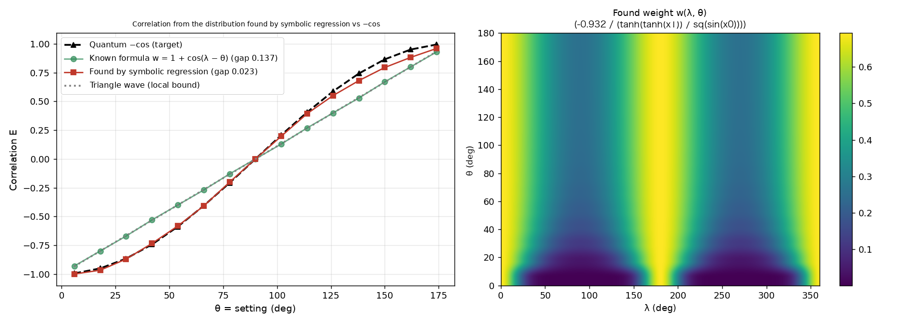
Left: the red line (the real solution found by symbolic regression) fits the black target (quantum −cos) much better than the grey-green line (a known wrong formula, w = 1 + cos(λ − θ)); the gap drops from 0.137 to 0.023. Right: heat map of the found weight w(λ, θ), corresponding to the readable expression (−0.932 / (tanh(tanh(x1)) / sin²(x0))); it has clear structure, not random noise.
② Framework 2 · searching the measurement function: a deeper problem with the criterion
Next, the measurement-function branch: fix measurement independence (λ’s distribution does not depend on θ) and search for a measurement function B(λ, θ) that produces a cos correlation. A false alarm followed: a single E(θ) curve was again fitted to a cos shape (gap vs cos only 0.035).
This time the problem was deeper: not a cheating search, but the wrong criterion. Under measurement independence the model reduces to a purely classical, local model, and local models can imitate a single curve without violating any Bell-type theorem. A criterion that can actually prove non-classicality must be (the four-point combination of two settings each for Alice and Bob); looking at one curve will always be fooled. This diagnosis decided that the next step had to change the criterion.
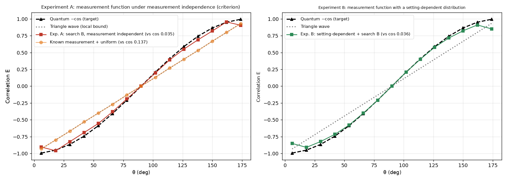
The measurement functions found in two independent experiments (measurement independence vs a setting-dependent distribution) both bring a single E(θ) close to −cos (gap 0.035 / 0.036). Both searches “succeeded” under entirely different premises, which shows the criterion cannot tell real from fake and must be replaced with a stricter one.
③ Framework 3 · searching the dynamics f: the criterion was broken three times before it held
This is the hardest layer: instead of the distribution or the measurement function, search for the lowest-level dynamical rule f(λ) itself. This line went through three versions.
v1 (a home-made CHSH sampling criterion): it found a solution with S = 3.40, apparently “breaking” the quantum limit 2√2 ≈ 2.828. That is not good news. Reproducing real quantum mechanics cannot exceed Tsirelson’s bound, so exceeding it means cheating. A review found that the distribution was secretly “seeing” the joint information of both Alice’s and Bob’s settings (signaling), which is physically forbidden. Discarded.
Right: the found dynamics (red) reads CHSH S = 3.40, far above the quantum limit 2.828 (green dashed). The number itself is a red flag. The left correlation curve also jumps around and is not smooth, further evidence of a fake solution that gamed the criterion rather than a real reproduction of quantum correlations.
v2 (shared-origin rebuild): learning from that, switch to exactly the Stage 4 shared-origin idea: a circle map containing no setting information, with Alice’s and Bob’s settings and λ all read out from different points of one trajectory, plus a hard no-signaling gate. This time CHSH read exactly S = 2.83 (the quantum limit) with a no-signaling deviation of only 0.017. It looked perfect, but that was the new loophole: CHSH only checks four specific angle combinations, and the search learned to please just those four points.
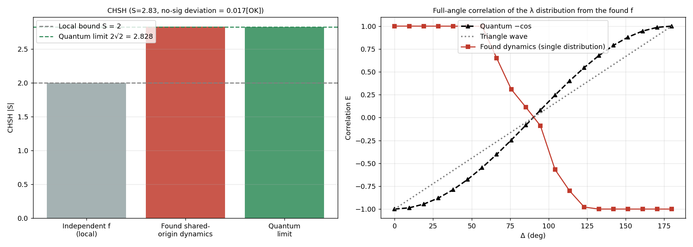
Left: CHSH lands exactly on the quantum limit. Right: spread out as a full-angle curve, the red line jumps like a staircase near Δ ≈ 95°, nothing like a smooth −cos. This is four-point overfitting: it pleases only the points the criterion checks, and the rest of the curve is wrong.
v3 (final: change the criterion instead of patching again): rather than invent another criterion, reuse the one already repeatedly validated and naturally cheat-resistant in the Stage 4 fractal work (4.2): the shared-origin structure itself guarantees no-signaling, plus a full-angle gap (the whole curve must match −cos, not just a few points). The 1D version found gap = 0.101 (still not good enough); upgraded to 3D, a single search found gap = 0.047, a clear improvement.
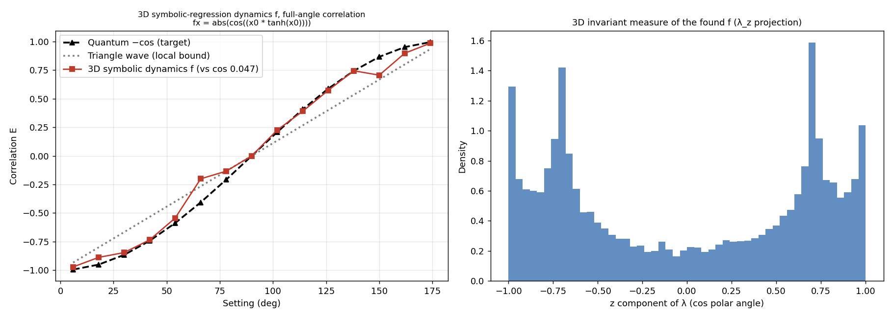
The 3D version found fx = |cos(x·tanh x)| in a single search. Its correlation curve (red) closely follows the quantum target (black dashed) throughout, gap vs cos only 0.047. With the new criterion, a formula with a trustworthy shape was finally found, but this is still a single result whose stability has not been checked.Left: 5 independent search seeds (s0–s4), each re-measured over several ensembles (mean ± std). All are far below the 0.08 threshold (red dashed); s1, s2 and s4 are very close (≈ 0.026). 5/5 pass.Right: the best seed (seed 1) found the formula f(x0) = cos(x0)·sin(x0), gap = 0.026; the green line almost exactly overlays the black quantum target and clearly departs from the grey triangle wave.
Final result: the Stage 4 fractal work had already shown that a single-seed result can be luck (best seed 0.011, another seed 0.136). So the single v3 result was not trusted directly. Five independent search seeds were run, each re-measured over several ensembles; that is the verification behind the “5/5 seeds pass” in the key result. Three versions of the criterion (home-made CHSH → shared-origin rebuild still overfitting four points → reuse of the validated 4.2 criterion) were needed to find one that held. It is the same logic as the project’s rules: calibrate first, never trust a single run, and check the code when a result looks too good.
5.2
Koopman spectral method
Approach
Use the spectrum to compute the invariant measure directly (the leading eigenvector), which can handle singular or fractal measures without a differentiable rule.
Key result
The engine works and can compute singular measures, but three setting-dependent versions all failed to produce cos.
Honest boundary
An honest negative result: spectral methods excel at “given the dynamics, find the measure”, but the difficulty in producing cos lies in the setting-dependent coupling structure, which is not their strength. They are not a silver bullet.
① Building and calibrating the engine: can a spectral method compute known measures without a differentiable rule?
The ultimate deadlock is that a true invariant-set fractal is non-differentiable everywhere, while both PINN and symbolic regression need a differentiable rule to train. Koopman (transfer operator / Perron–Frobenius operator) offers a side route. Instead of tracking specific chaotic trajectories, it studies the spectrum of the linear operator that pushes a probability distribution forward one step. The invariant measure is the eigenvector for eigenvalue 1. In principle this does not need a differentiable rule, and fractal or singular measures can be found directly as eigenvectors, possibly sidestepping the deadlock.
Method: discretize state space into N cells, sample points to estimate where each cell lands after one step, build the transition (Markov) matrix, and use an eigendecomposition to take the eigenvector with eigenvalue closest to 1 as the invariant measure. No training, no gradients, no divergence. Following “calibrate first”, it was tested on two problems with analytic answers: anchor A (an irrational rotation) should give a uniform measure, and anchor B (the logistic map f = 4x(1−x)) should give the analytic arcsine measure.
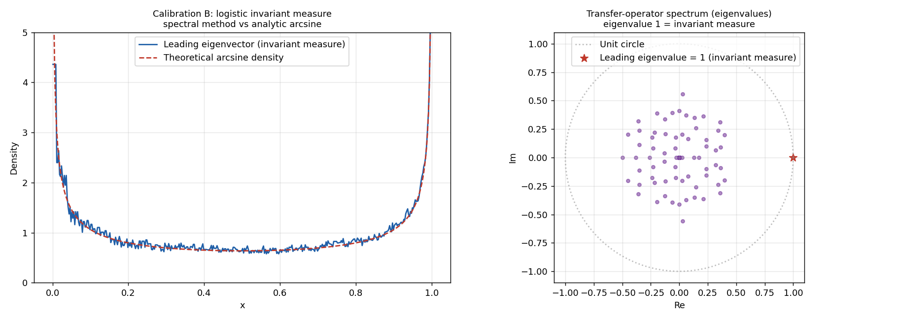
Left: the spectral measure for the logistic map (blue) against the theoretical arcsine density (red dashed): correlation 0.96 in the middle, and both diverge at the ends, a match. Right: eigenvalues of the transition matrix; the leading eigenvalue sits exactly at 1 (red star), corresponding to the invariant measure. Both calibrations pass, confirming that the spectral method computes known measures without a differentiable rule, something neither PINN nor symbolic regression can do.
② Three setting-dependent attempts, all stuck near the triangle wave
With the engine calibrated, it was connected to a setting-dependent structure: the transfer operator itself depends on the angle θ (written Lθ), the resulting invariant measure ρθ varies with θ, and a sign measurement reads out E(θ) to see whether it matches the quantum −cos(θ). Three attempts:
v1 · smooth shift: add a single-peaked smooth bias that shifts with θ to a base chaotic transfer operator. This repeated a pitfall already hit in Stage 4 (approach B, shared origin): shifting a smooth distribution changes strength but not shape. The result stuck near the triangle wave, gap vs cos about 0.135, essentially no different from the triangle-wave baseline (about 0.14).
v2 · second-harmonic modulation: learning from v1, use a second-harmonic bias (containing cos(2(λ − θ/2))) so that the invariant measure’s shape, not just its strength, changes with θ. Sweeping the bias strength from 0 to 4 did push the cost I(λ; θ) very high (up to 0.69 bit, far above Hall’s 0.0663), but the gap vs cos did not shrink and even grew: more cost, no cos shape.
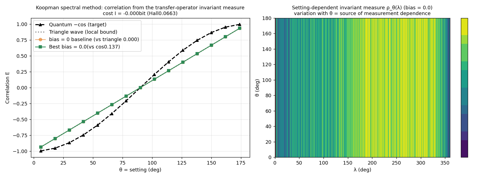
Left: the correlation E(θ) (green) is slightly closer to quantum −cos (black dashed) than the θ-independent baseline (orange), but still clearly off and closer to the triangle wave (grey dashed). Right: heat map of ρθ(λ) against θ; the measure does move, but its overall shape changes little.
v3 · moving a singular measure: a different angle. Use a logistic-type transfer operator directly (its invariant measure is naturally singular, arcsine-shaped with diverging ends, close to fractal). First calibrate that the base measure is truly “sharp” (singularity index max/mean far above the uniform value of 1), then let θ move the phase of the spike. This came closest, with gap vs cos down to about 0.10, but still did not cross the cos threshold (0.08).
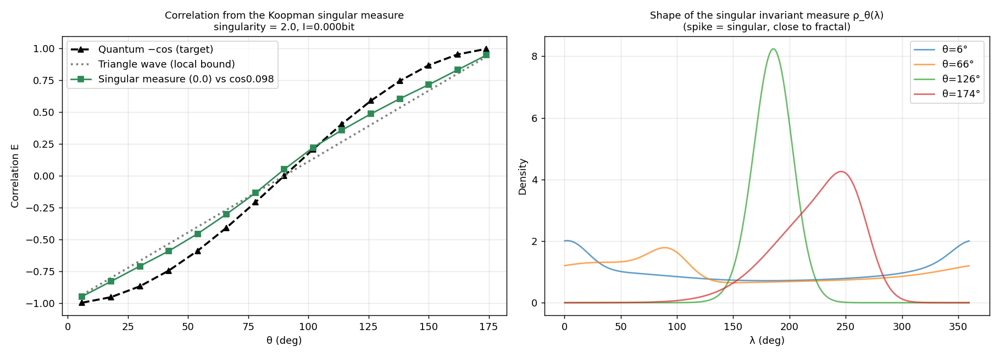
Left: the correlation (green) is closer to quantum −cos (black dashed) than the first two versions, gap about 0.10, still not passing. Right: the invariant measure at different θ. All three curves (phase 0, 2.5, 4.5) are the same sharp single peak; only the peak’s position shifts with θ, and its shape does not change.
Final result: compared with the real solution from symbolic regression framework 1, w ∝ sin²(λ)/g(θ), the key is not moving the whole measure around but coupling the measure’s shape to θ in a specific way. Koopman is good at computing a measure for a given rule, not at sculpting this coupling structure, which is exactly its limit, and why all three attempts ended the same way. The engine itself succeeded (it computes singular or fractal measures from the operator spectrum with no differentiable rule), but all three versions failed at producing cos, and this is recorded honestly as a negative result.
5.3
Breaking the fractal vs differentiable deadlock
Approach
Up to this point there were two partial successes that would not fit together: Stage 4 (4.2) had a true fractal but no readable formula, and Stage 5 symbolic regression had a readable formula but no fractal. This step puts both half-products into one model.
Key result
The fractal comes from the dynamical structure and cos from the driving functions, so the two no longer exclude each other. The deadlock is broken.
Honest boundary
Step 1 immediately caught a floating-point death bug in the doubling map (mantissa exhaustion), fixed with a smooth perturbation and a guard.
① What the deadlock is: two half-products that don’t fit together
Stage 4 fractal work (4.2): the attractor is a true fractal (D2 ≈ 1.84), but it relies on the baker map, a piecewise hard-coded compression rule with no readable analytic formula. Stage 5 symbolic regression: it found a readable formula f = cos(λ)·sin(λ), but the dynamics were an area-preserving torus map that does not contract; its attractor fills the whole space and is not a fractal.
On the surface the logic is: “a true invariant set = fractal = non-differentiable everywhere, and readable symbolic formulas have so far only been found on smooth, non-fractal foundations.” It sounds as if “readable” and “fractal” inherently conflict.
② The key idea: the fractal comes from structure, readability from the driving functions
Do not chase “a non-differentiable symbolic expression”, which contradicts itself (symbolic expressions are usually smooth). Instead, separate “where the fractal comes from” and “where readability comes from”, and control them with two independent knobs. The structure has an expanding dimension x (multiplied by BX ≥ 2 each step, producing chaos) and two contracting dimensions y and z with contraction ratio a < 1, whose direction of contraction is set by driving functions Sy and Sz that are to be searched.
As long as a < 1, the measure in y and z collapses exponentially. The fractal is guaranteed by the structure, with no fine-tuning and no luck involved. Meanwhile Sy, Sz and the perturbation gx added to the expanding term are all smooth symbolic expressions, so they stay readable. Fractality comes from the geometry of contraction and readability from the driving functions, so by design the two no longer exclude each other.
③ Skeleton only, no cos search: two calibrations
Following the methodological rules, the cos search was not thrown in immediately. If a good result came out, it would be impossible to tell whether the fractal structure itself holds or the search got lucky. So the first step only builds the skeleton and calibrates, without the cos target: the driving functions are fixed smooth examples (not searched), and the only question is whether the structure is fractal.
Calibration A (is the tool accurate?): the D2 estimator must read ≈ 3 on a space-filling point cloud in a cube, or the tool cannot be trusted. Calibration B (is the structure fractal?): sweep four contraction ratios a = 0.25 / 0.35 / 0.45 / 0.55 and check that every measured D2 is below 3 (fractal) and increases with a (weaker contraction, closer to space-filling, the monotonic relation theory predicts).
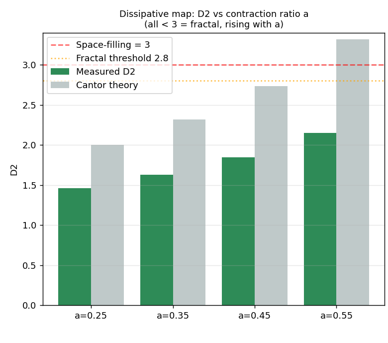
All four contraction ratios (green bars = measured D2) are below the space-filling line (3, red dashed) and below the fractal threshold (2.8, orange dotted), and rise monotonically with a, following the trend of the grey bars (Cantor theory). The structure is a fractal, not a fluke.
④ A real bug caught along the way: floating-point death
The first run hit “doubling-map floating-point death”. If the expanding term is the exact x′ = (2x) mod 1, each iteration loses one binary mantissa bit, and after about 52 steps x is ground down to exactly 0. This is not the trajectory truly contracting; it is an artifact of exhausted numerical precision, and it would distort the fractal-dimension measurement completely.
The fix: add a smooth perturbation gx(x) = 0.13·sin(2πx) to the expanding term, breaking the exact doubling that exhausts the mantissa, and add an “expanding-dimension guard” (the standard deviation of x must exceed 0.2) so any future collapse of this kind is caught automatically rather than by eye. Same logic as the project rule: calibrate first, and check the code when a result looks too good.
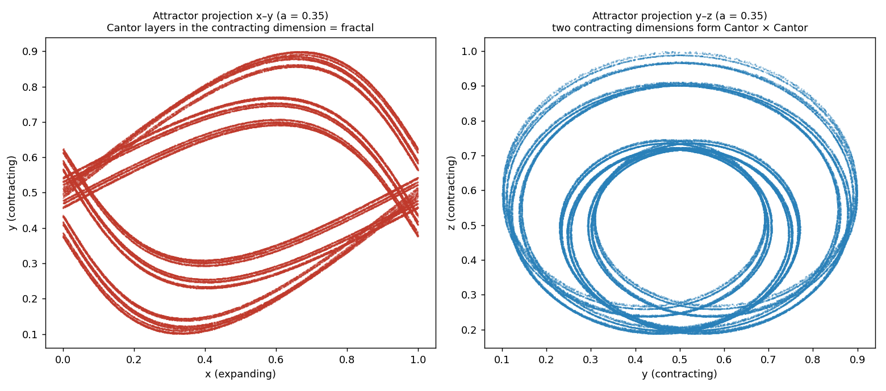
Left (x–y projection): the contracting dimension y shows layered Cantor structure rather than a uniform smear. Right (y–z projection): the two contracting dimensions form a Cantor × Cantor ring texture; it is visibly not a solid disk but countless nested rings, a fractal structure.
Outcome: all four contraction ratios read D2 < 2.8 and rise monotonically with a, the cube calibration passes, and the expanding-dimension guard passes. The fractality of this dissipative symbolic map is built into the structure, not luck, and the driving functions are smooth symbolic trees, so readability is preserved. Fractal and readable hold at the same time for the first time, and the deadlock is broken.
But this step only builds and validates the skeleton. The driving functions Sy, Sz and gx are still hand-given fixed examples; driving functions that produce cos have not yet been searched. That is the job of the next card, “three-in-one”: hand these driving functions to symbolic regression so that cos also emerges on this fractal-plus-readable skeleton.
5.4
Three-in-one pinned down; readout R and directions also emerge
Approach
The previous step only built the skeleton and showed the fractal-plus-readable structure holds; the driving functions Sy, Sz and gx were still fixed hand examples. This step hands them to symbolic regression, aiming for a correlation that matches −cos while keeping the fractal. If it works, fractal, readable formula and cos appear together in one model for the first time, hence “three-in-one”. After that, two hard-coded parts remain: the readout map R from attractor state to observable, and the measurement directions chosen by Alice and Bob. This step hands those to symbolic regression too, approaching zero hand design.
Key result
5/5 seeds robust (gap ≈ 0.018); the curve matches −cos; curve-reproduction lower bound ≈ 0.068 (Hall’s order of magnitude). The readout R emerges with 4/4 passing. After three rounds of structural diagnosis (shared hidden variable → spherical parameterization → amplitude-based CHSH), the two-sided directions give an effective CHSH ≈ 2.80.
Honest boundary
Step 4 caught a measurement degeneracy (P(A+) = 0.998, Alice’s measurement existing in name only) → a measurement-balance guard was added. Step 6 fixed an inflated single-point CHSH formula that produced a false “beyond-Tsirelson 3.11”.
① Step 2: hand the driving functions to symbolic regression, with three anti-cheating guards
Only one tree Sy is searched; Sz is forced to be its mirror (Sz = −Sy). This lowers the search dimension and naturally makes the two contracting directions y and z anti-phase. The fitness has three anti-cheating guards, all required: ① the criterion is the full-angle gap, not bare CHSH (the symbolic-regression line already learned that CHSH at four points gets fooled); ② a fractal guard D2 < 2.6, preventing the search from quietly inflating the attractor back to space-filling to please the cos target and slipping back to “formula without fractal”; ③ an expanding-dimension guard x.std > 0.2, preventing a repeat of the previous card’s floating-point death.
Before the real search, the fitness itself was calibrated: a hand-given driver that should produce cos (sin/cos type) and one that should only give a trivial result (a constant) must score clearly differently. Only once the criterion was trustworthy was the search scaled up.
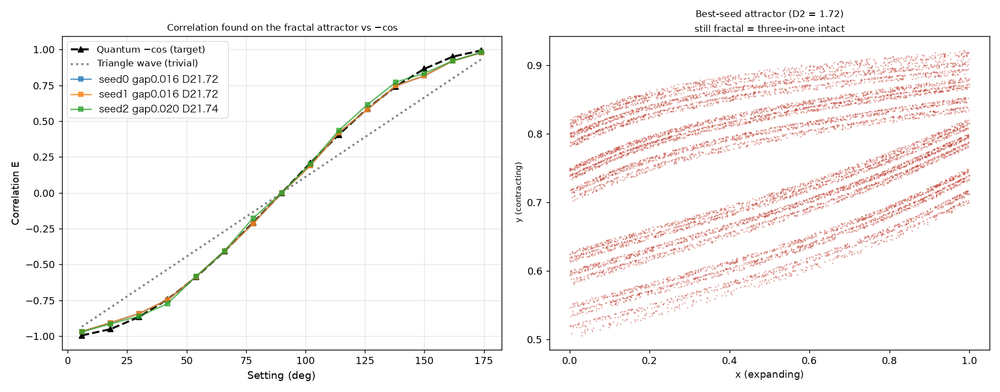
Left: the correlation curves of 3 search seeds all clearly approach the black −cos target, while D2 stays in the fractal range. Right: the attractor projection of the best seed; the layered fractal structure is intact after the search. This is only a small ensemble of 3 seeds, not yet checked for cheating, and needs to be pinned down next.
② Step 3 (A): pinning down robustness with 5 × 5 seeds and ensembles
Step 2’s result came from a small ensemble of 3 seeds. To guard against a lucky single run and against fluctuation in the evaluation itself, the review was scaled up: 5 search seeds × 5 ensemble seeds each, 25 independent runs. All 5/5 passed, with the gap stable near 0.018, so the driving function from step 2 is not an isolated case.
③ Step 3 (B): a hard no-signaling test, and a real methodological bug caught here
The check: Alice’s readout distribution must not change when Bob chooses a different measurement direction. But a comment in the script admits that the first version of the test was itself wrong. It conditioned on Bob’s measurement outcome (the B = +1 subset) and then checked whether Alice’s distribution changed. A and B are correlated by design (that is where the cos correlation comes from!), so the measured “drift” was not signaling at all, only the correlation itself. The test mistook correlation for evidence of cheating.
The corrected method scans Bob’s measurement direction (not outcome), gives each direction its own fresh ensemble (to create real sampling noise and avoid fooling ourselves), and checks that Alice’s marginal P(A = +1) only fluctuates at the noise level. This is another error the project caught in its own “chronicle of measurement failures”. After the fix, the drift sits near the sampling-noise floor: pass.
④ Step 3 (C): cost check, ruling out information-level cheating
Reuse the convex-optimization LP already calibrated in an earlier stage (fed the ideal −cos, it must read ≥ 0.066 bit, confirming the ruler is not broken) to compute the measurement-dependence cost this solution pays. A cost near 0 with a cos shape would suggest cheating (via signaling or some degenerate solution); a cost near Hall’s order of magnitude indicates an honest superdeterministic solution. Result: the curve-reproduction lower bound is ≈ 0.068, the same order as Hall’s 0.0663: pass.
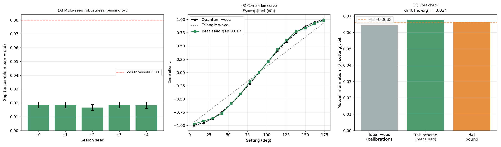
Three-sided review. Left: 5 × 5 seed-and-ensemble robustness, gap stable below the threshold. Middle: no-signaling, Alice’s marginal drift with Bob’s direction stays within the noise floor. Right: cost check, curve-reproduction lower bound ≈ 0.068, close to Hall’s bound, so the cos shape was not bought by cheating.
⑤ Step 4: the readout map R emerges, and a real “measurement degeneracy” bug is caught
With the pinned-down dynamics fixed (Sy = 2.48·x0), only the readout is searched: one “component generator” tree, cyclically shifted over variables (x → y → z) to produce Rx, Ry and Rz, which lowers the dimension and keeps the structure symmetric. Calibration first: a hand-written readout (a known good solution) must have a low gap, and a degenerate constant readout must have a high gap, so the evaluation distinguishes good from bad before the search is opened up.
The search did hit a problem. Scoring only the gap (does the curve look like cos), symbolic regression found a cheating solution: bias the readout toward one pole of the sphere so that P(A = +1) ≈ 0.998. Alice’s outcome is then almost constant, the cos correlation is carried by Bob alone, and Alice’s “measurement” exists in name only, not a real binary measurement. The fix was a measurement-balance guard: deviating from 50/50 by more than 0.1 is heavily penalized, forcing the search toward genuine binary measurements. After the fix, all 4 seeds pass (4/4) and the cost check also passes (≈ Hall).
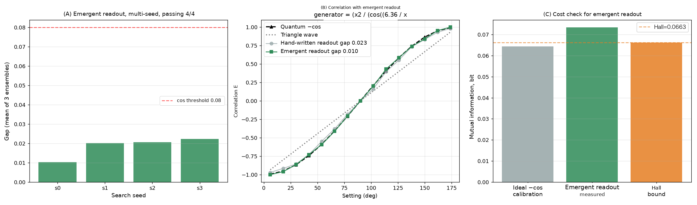
Left: the gap of the emergent readout passes for all 4 search seeds (green bars). Middle: the correlation curve with the emergent readout (green) follows quantum −cos (black dashed). Right: cost check, the emergent readout’s cost is close to Hall’s bound, not obtained through signaling.
⑥ Step 6: both measurement directions emerge, after three rounds of structural diagnosis fixing physics errors
The goal: even the directions Alice and Bob each choose should emerge from the shared-origin trajectory. This line hit three pitfalls in a row, each time because the physical structure was wrong, not because the search was too weak.
① Shared hidden variable: the first version had Alice measure a vector vA at one time on the trajectory and Bob measure vB at another time (two different readout points). But x is the expanding chaotic dimension, and after a dozen or so iterations the two are fully decorrelated; chaos washes out the correlation between vA and vB. CHSH came out at only 0.17, an almost flat zero line. A true Bell scenario requires Alice and Bob to measure the same shared hidden-variable state v(λ), each in a different direction. After switching to a shared v, the correlation reappeared.
② Spherical parameterization: early versions locked the measurement direction to the equatorial plane (the z component unused), distorting the curve. The fix lets both the polar and azimuthal angles emerge over the full sphere (two trees search them separately), an unbiased configuration.
③ Amplitude-based CHSH, fixing a false “beyond-Tsirelson” criterion bug: the earliest version used the crude single-point formula S = |3E(45°) − E(135°)|, which amplifies any local error at 45° threefold. The curve itself had a gap of only 0.022 (an almost perfect cos), yet the amplification made S read 3.1, apparently exceeding the quantum Tsirelson bound 2√2 ≈ 2.828. Believing it would have meant the model was signaling. The review found the problem was the formula itself. Switching to an amplitude fit of the whole curve (S_eff = 2√2·amp), which is not amplified by single-point noise, gave S ≈ 2.80: beyond the classical limit 2 but within Tsirelson, an honest result, not cheating. Another false positive caught on the spot by “check the code when a result looks too good”.
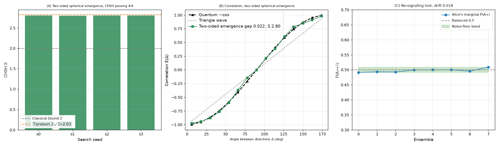
Left: CHSH readings (amplitude method) for 4 search seeds, most between the classical limit 2 and the Tsirelson limit 2√2, the honest beyond-classical, not-beyond-quantum range. Middle: the correlation curve from two-sided spherical emergence follows quantum −cos. Right: no-signaling test, Alice’s marginal drift across ensembles stays within the noise floor band.
Final result: fractal (D2 ≈ 1.72), readable formula (of the form Sy ∝ x0) and cos correlation hold together in one model for the first time, confirmed by 5/5 robustness, no-signaling and the cost check. On top of that, the readout map R (4/4 pass) and both measurement directions â / b̂ (after three rounds of structural diagnosis, effective CHSH ≈ 2.80, beyond classical but within Tsirelson) also emerge from the shared-origin trajectory. At this point, the only hand-set parts are “the target is to reproduce cos” and the anti-cheating guards; the dynamics f, readout R and both directions are all readable formulas found by symbolic regression, not fixed by hand.
Chained together, the three formulas form this progressively pinned-down and reused formula chain:
driving function Sy = 2.48·x0 (Sz = −Sy)
readout map R = cos(e²·tanh(x1)) (Rx/Ry/Rz by cyclic shift)
Alice direction polar ≈ 2.6, azimuth ≈ 0.034
(best solution, seed 0: gap = 0.022, CHSH = 2.805)
The first two are nontrivial symbolic expressions, but the third (Alice’s direction) came out as an almost constant offset angle, not a complex function of the state. Across seeds (seed 1’s azimuth includes x2; the other seeds’ azimuths are small constants within ±2), the claim that “directions can emerge too” holds, but the emergent optimum is usually a simple near-fixed offset rather than an intricate state-dependent function. This is recorded as it is, without exaggeration.
5.5
Fully end-to-end, zero hand design
Approach
Every earlier step was fixed piece by piece: three-in-one searched only f with readout and directions fixed; the readout step fixed f and searched only R; the direction step fixed f and R and searched only directions. This step leaves nothing fixed: four symbolic trees (dynamics f, readout R, Alice’s polar angle, Alice’s azimuth) are packed into one chromosome and evolved jointly in one pass. It is the closest attempt to zero hand design, and it also fills the gap that the previous direction step never verified cost.
Key result
5/5 seeds pass. Each component’s formula differs between seeds, yet all converge to reproducing quantum −cos. The only human-set parts are the cos target and the anti-cheating guards.
Honest boundary
Tuning the readout sharpness can reach amp ≈ 0.96 with a curve-reproduction lower bound ≈ 0.064, close to Hall (a hard red-line guard confirms Hall’s theorem is not violated).
① Calibration: assemble a known good answer to check the scoring separates good from bad
The search does not start empty-handed. The passing formulas found separately in earlier steps are first assembled by hand: f = 2.48·x0 (step 2), R = cos(e²·tanh(x1)) (step 4), Alice’s polar angle = 2·x0 (step 6), azimuth ≈ constant 0. This combination is fed to the joint scoring function, which must give it a low penalty and give an all-constant bad combination a high penalty. Only once the scoring can tell them apart is the search opened up.
② Joint search: all guards written into the fitness, four trees passing together
5 search seeds, each evolving 140 individuals for 45 generations. The penalty function binds every anti-cheating condition at once: a low curve gap (matches cos), D2 < 2.6 (fractal), CHSH within (2, 2√2 + tolerance] (beyond classical but not beyond Tsirelson), and both Alice’s and Bob’s outcomes close to 50/50 (neither side degenerating to a constant). Any failure is heavily penalized, forcing the four trees to pass together rather than sacrificing one to satisfy another.
③ Final review: cost LP + no-signaling, closing the gap left by the previous step
For each seed’s best solution, two independent checks: ① the convex LP computes the information cost of the curve, which must be ≥ 0.04 (near Hall’s order, not pushed near 0 through signaling); ② Alice’s marginal drift is scanned over 8 independent ensembles and must stay within the sampling-noise floor, confirming no signaling.
Left: CHSH readings for all 5 search seeds pass (5/5), between the classical limit 2 and the Tsirelson limit 2√2. Middle: the correlation curve from the full end-to-end joint search (green) closely follows quantum −cos (black dashed). Right: cost review, the measured curve-reproduction lower bound is close to Hall’s bound, and the no-signaling drift stays within the noise floor.
④ Results, and four honest boundaries the script lists itself
All 5 seeds pass every guard, and each seed finds different formulas for f, R and the directions, yet all converge on reproducing quantum −cos. So this is not memorizing one isolated solution; the structure itself admits many valid solutions.
The script’s own conclusion lists four boundaries, stated without hedging: ① “CHSH ≈ 2.8” is converted from the curve amplitude (S = 2√2·amp), not a genuine four-angle independent Bell measurement, and says the same thing as the gap criterion, so they are not two independent pieces of evidence. ② “Cost ≈ Hall” is the mathematical result of how much information this cos curve needs at minimum (Hall’s theorem). If the curve looks like cos, the cost is ≈ Hall by definition; the mechanism’s measurement dependence was not measured independently. ③ No-signaling is guaranteed by the model structure (Alice’s readout simply contains no information about Bob’s direction). The drift test checks that this guarantee is not broken numerically; it is a structural argument, not verification from scratch. ④ D2 < 2.6 only sets an upper limit. Some seeds actually have D2 ≈ 1 (close to degenerating into a line), so the fractal richness is modest, though they still pass.
Final result: the only human-set parts left are the target itself (reproduce −cos) and the specific thresholds of the anti-cheating guards. The dynamics f, the readout R, and the polar and azimuthal angles of Alice’s direction are all readable formulas found from scratch by symbolic regression, not fixed by hand. A later extension (step 8) tuned the readout “sharpness” to push the amplitude to ≈ 0.96 and the cost to ≈ 0.064, very close to Hall’s bound of 0.0663, with a hard red-line guard: if any run showed “amplitude ≈ 1 with cost below 0.0663”, that would physically violate Hall’s theorem, so it must be an algorithm error or cheating and must raise an alarm, never be celebrated as a breakthrough. This red-line guard confirmed the whole process never entered that forbidden zone.
Stage summaryOn dissipative symbolic dynamics with a built-in fractal, readable f, R and two-sided directions were found end-to-end, reproducing the quantum −cos correlation and approaching zero hand design. The strength of this evidence must be strictly bounded; see Stage 6.
6Rigor · project-wide audit▸Calibrate first / prevent cheating / self-correct
The closer research gets to “success”, the more it must guard against self-deception. This stage is the integrity guarantee of the whole project: a running chronicle of measurement failures, and a code audit covering all 120 files, followed by proactively downgrading places where the wording was stronger than the evidence.
6.1
Chronicle of measurement failures · 11 cases
Cases
Signaling cheats (shared trajectory points, S = 2.776; dependence on relative angle, S = 3.4), a CHSH angle bug, single-curve overfitting, cos(2λ)-type sign cheating (I = 0 fake cos), D2 estimator underestimation, doubling-map floating-point death, measurement degeneracy P(A+) = 0.998, no-signaling conditioned in the wrong direction, an inflated single-point CHSH formula (a false beyond-Tsirelson 3.11)…
Key result
Every one was caught on the spot and discarded through the discipline of “calibrate first / multiple seeds / check the code when a result looks too good”. None entered the final conclusions.
Honest boundary
This list is evidence of rigor, not a stain.
6.2
Project-wide code audit
Approach
A parallel audit of all 120 files and 18,040 lines (7 audit units, reading every file), looking specifically for correctness bugs, cheating patterns, measurement failures, and whether each conclusion is supported by the code.
Key result
No data fabrication, no signaling false positives, no false “beyond Tsirelson”, no false “beating Hall”: no false conclusion entered the final conclusions. In the per-stage ratings, the foundations and the cost curve are the most solid; overall B to B+.
6.3
Honest downgrades · strict boundaries
Approach
What the audit caught was over-interpretation, not fabrication. The downgrades, stated as they are:
Key result
① “Cost ≈ Hall” is the theoretical minimum mutual information for reproducing the correlation curve (Hall’s theorem itself: if the curve is cos, it must be ≈ Hall), not evidence that the mechanism’s true I(setting; λ) is efficient. ② “CHSH = 2.80” is an amplitude conversion S = 2√2·amp, not a four-angle independent Bell measurement. ③ “No-signaling” is guaranteed by structure, not confirmed by measurement.
Honest boundary
The main document’s overclaims have been corrected accordingly (“0.046 = Hall”, old D2 values, calling 3/5 “robust”, and similar wording).
6.4
Genuinely open problems (not bugs; they need new work)
What is still unsolved
An honest list of what this research has not solved:
Key result
The mechanism’s true I(setting; λ) has never been measured reliably and directly (high-dimensional mutual-information estimation is a real tooling wall). “Curve-reproduction lower bound ≈ Hall” ≠ “the mechanism reaches the bound in information efficiency” (unproven). Stable passing of cos (5/5) and an amplitude of exactly 1 remain open.
Honest boundary
These are the honest endpoint of this research and the starting point of the next.
Stage summaryA research record that invites a code audit on itself and corrects its own overclaims accordingly; that is itself part of scientific rigor. The core open problem, “the rule that fits the universe”, remains unsolved, and the research continues.
Where the research stands
What was built
A prototype-level differentiable invariant-set surrogate. On dissipative symbolic dynamics with a built-in fractal (measure zero), readable dynamics f, readout R and two-sided measurement directions were found end-to-end, reproducing the quantum −cos correlation. The theoretical minimum measurement dependence of its correlation curve agrees with Hall’s bound, and no-signaling holds by structure.
Strict boundaries
“Cost ≈ Hall” is the curve-reproduction lower bound (≠ the mechanism’s true mutual information). “CHSH ≈ 2.80” is converted from curve amplitude (not an independent Bell measurement). The mechanism’s true I(setting; λ) has never been measured directly because of the tooling wall in high-dimensional mutual-information estimation. This is the honest endpoint of the research, and the next stop.
References and theoretical sources
Stage 1 · Origins: EPR, Bell’s theorem and superdeterminism
BookP. C. W. Davies & J. R. Brown (eds.), The Ghost in the Atom, Cambridge Univ. Press (1986). Contains Bell’s 1985 interview describing the superdeterministic way out.
ConceptB. S. Tsirelson, the upper bound on quantum correlations S ≤ 2√2 ≈ 2.828 (Tsirelson’s bound, 1980).
ConceptMeasurement independence (statistical independence / free-choice assumption): the implicit premise of Bell’s theorem, and what superdeterminism gives up.
PaperS. Hossenfelder & T. Palmer, Rethinking Superdeterminism, Front. Phys. 8, 139 (2020). The general superdeterminism framework, including a reply to the fine-tuning / conspiracy charge.
Stage 2 · Differentiable surrogates and measurement tools
ConceptKoopman operator / transfer operator (Perron–Frobenius) spectral methods: computing invariant measures from the spectrum of a linear operator.
ConceptLyapunov exponents: the basic quantity for orbit contraction and expansion, used to identify attractors and fractal dimension.
ConceptConvex optimization / linear programming (solved with cvxpy): the minimum measurement-dependence cost (a KL lower bound) for a given correlation curve.
ConceptThe arcsine distribution μ(x) = 1/(π√(x(1−x))): the analytic invariant measure of the r = 4 logistic map, used as a calibration ground truth.
ConceptThe CGLMP inequality (high-dimensional qudits), GHZ states and the Mermin inequality (many bodies), the PR-box (beyond-quantum no-signaling correlations): the standard scenarios for the four extensions in Stage 3.
ConceptThe Bloch sphere + Fibonacci uniform sphere sampling: the geometric construction for the full-angle singlet reproduction on the sphere.
Stages 4 and 5 · Fractals, shared origin and symbolic dynamics
ConceptThe dissipative baker map / Hénon map: dynamical constructions that compress an attractor into a measure-zero, Cantor-type fractal.
ConceptCorrelation dimension D2 (Grassberger–Procaccia estimator): the measure used to decide whether an attractor is fractal.
ConceptSymbolic regression / genetic algorithms (expression trees): self-built, to search for readable dynamical formulas that produce cos correlations.
ConceptPINN (physics-informed neural network): a differentiable framework that writes physical constraints into the loss and solves for rules by gradient optimization.
Stage 6 · Audit and honest boundaries
ConceptThe no-signaling condition: a floor shared by quantum mechanics and relativity, used throughout as the red line against cheating.
ConceptMutual information I(λ; setting) and KL divergence: the information-theoretic tools that quantify the “cost” of measurement dependence. This research strictly separates the curve-reproduction lower bound from the mechanism’s true mutual information.
Items marked Paper or Book are verifiable published works; the title is a link to the publisher’s page (all checked through the DOI resolver). Items marked Concept are standard theories, methods or mathematical objects used in this research, common tools in the field rather than one specific paper.